Win32
Win32课程介绍
很多人对Win32的认识是错误的，他们认为Win32就是画界面，都已经学MFC了还学什么Win32？
Win32不是用来画界面的，如果你以后要在Windows写好程序，是必须要学Win32的；摆正学习态度。
字符编码
我们会经常接触到各种各样的字符编码，本章节就来讲解一下常见的编码。
原始的ASCII编码
计算机是由美国人发明的，所以一开始设计编码的时候只会考虑到自身的元素，采用ASCII编码完全可以满足其需求，但是计算机普及之后，很多国家的文字是象形文字，所以我们使用ASCII编码是无法满足需求的。
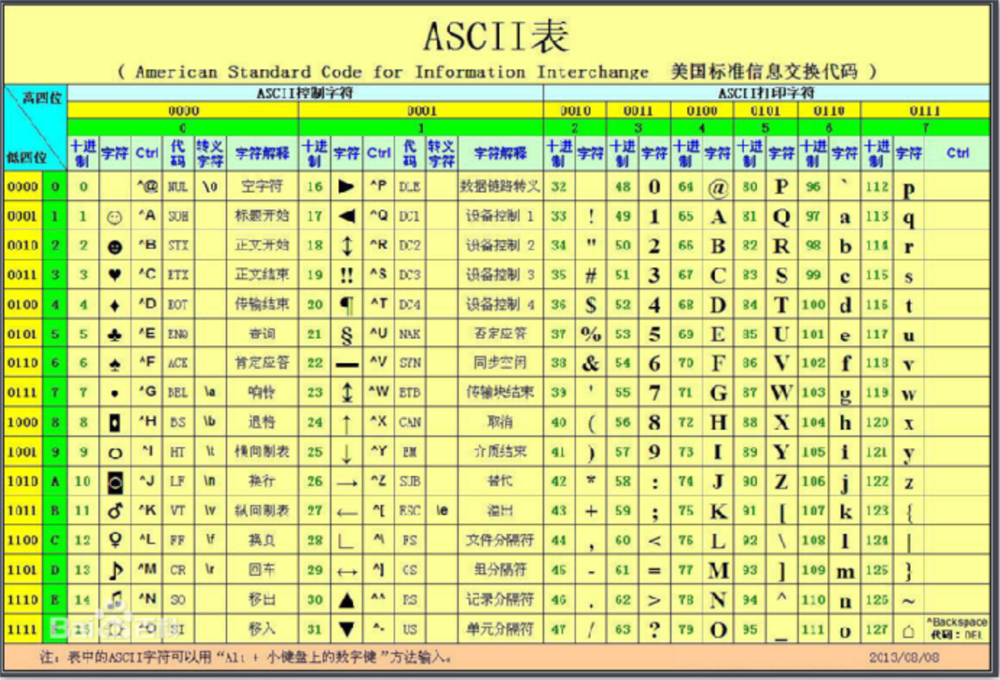
ASCII编码的拓展：GB2312或GB2312-80
由于ASCII编码无法满足需求，所以在其基础上进行扩展，大家都知道ASCII编码只有0-127，用十六进制表示是0x00-0x7F，而之后的0x80-0xFF在标准的ASCII编码中是不存在的，所以就出现了我们所说的ASCII编码的扩展。

但是这样能满足中文、韩文这种象形文字吗？其实并不可以，如上这张表实际上使用频率很低，而这时候GB2312编码（该编码与GBK没有什么本质区别，无非就是收录的汉字和图形符号的区别：GB2312标准共收录6763个汉字，GBK共收入21886个汉字和图形符号）考虑到这个因素就占用了这张表，那么是怎么占用的呢？其本质就是创建两张如上图所示的表，然后进行拼接，两个字节加起来就组成一个新的中文文字。
例如：中国的“中”这个字，就是0xD0和0xD6拼接起来的。这种编码是否存在问题？这是必然的，我们已经知道了该编码的设计原理，假设我们将“中国”这两个字发给国外的朋友，他的电脑上并没有该编码表，所以解析出来的则不会是汉字，而会出现大家所熟知的“乱码”。
Unicode编码
为了解决ASCII的缺陷，Unicode编码就诞生了，那么Unicode是如何解决这一问题的呢？
其实很简单，Unicode编码创建了一张包含世界上所有文字的编码表，只要世界上存在的文字符号，都会赋予一个唯一的编码。
Unicode编码的范围是：0x0-0x10FFFF，其可以容纳100多万个符号，但是Unicode本身也存在问题，因为Unicode只是一个符号集，它只规定了符号的二进制代码，却没有规定这个二进制代码应该如何去存储。
假设中这个字以Unicode方式表示占2个字节，而国这个字却占4个，这个时候你该如何去存储？
Unicode存储的实现方式
UTF-16
UTF-16/UTF-8是Unicode存储的实现方式；UTF-16编码是以16个无符号整数位单位，注意是16位为一个单位，但不表示一个字符就只有16位，具体的要看字符的Unicode编码所在范围，有可能是2字节，有可能是4字节，现在机器上的Unicode编码一般指的就是UTF-16。
我们举个例子（虚构）：
中（Unicode编码）：0x1234
国（Unicode编码）：0x12345
UTF-16存储的时候，“中”这个字肯定是存储的0x1234，但是“国”这个字就不一样， 我们知道UTF-16是16位（2字节）为一个单位，所以国这个字拆下来存储应该是0x00 0x01 0x23 0x45。
UTF-16的优点一看便知：计算、拆分、解析非常方便，2个字节为一个单位，一个一个来。
UTF-16是否是最优解呢？其实不然，我们通过如上的例子中可以看到一个很明显的缺点，那就是UTF-16会存在浪费空间的情况，因为其16位（2字节）为一个单位，它需要字节对齐，例如字母A只需要一个字节就可以表示，而使用UTF-16时就会变成2个字节，所以很浪费，而这时候UTF-8横空出世。（UTF-16在本地存储是没有啥问题的，顶多就是浪费一点硬盘空间，但是如果在网络中传输，那就太过于浪费了）
UTF-8
UTF-8称之为可变长存储方案，其存储根据字符大小来分配，例如字母A就分配一个字节，汉字“中”就分配两个字节。
优点：节省空间；缺点：解析很麻烦。
UTF-8存储的方式是有对应表的：

例如字母A，在0x000000 - 0x00007F范围之间，则采用0XXXXXX的方式进行存储，也就是按照一个字节的方式来不会改变什么，而汉字”中“则不一样了。
中（Unicode编码）：0x4E 0x2D，它属于0x000800 - 0x00FFFF范围之间。
0x4E 0x2D = 0100 1110 0010 1101，其以UTF-8的方式存储就是1110 (0100) 10(11 1000) 10(10 1101)，括号包裹起来的就是汉字“中”的Unicode编码。
最后一个问题，假设我们把UTF-8的文本格式发给对方，那对方如果按照UTF-16的方式去解析该怎么办？如何让对方只采用UTF-8的方式去解析呢？
BOM（Byte Order Mark）
BOM中文为字节顺序标记，其就是用来插入到文本文件起始位置开头的，用于识别Unicode文件的编码类型。
对应关系如下：
C语言中的宽字符
本章主要是讲解在C语言中如何使用上一章所述的编码格式表示字符串。
ASCII码：char strBuff[] = "中国";
Unicode编码（UTF-16）：wchar_t strBuff[] = L"中国"; // 这里需要在双引号之前加上L是因为如果你不加的话，编译器会默认使用当前文件的编码格式去存储，所以我们需要加上。（注意使用这个的时候需要包含stdio.h这个头文件）

Unicode编码这种表现形式实际上就是宽字符，所以在提起宽字符的时候我们就应该想到这种方式。
ASCII编码和Unicode编码在内存中的存储方式不一样，所以我们使用相关函数的时候也要注意，如下图所示，ASCII编码使用左边的，而Unicode则是右边的：

例如我们想要在控制台中打印一个宽字符的字符串：
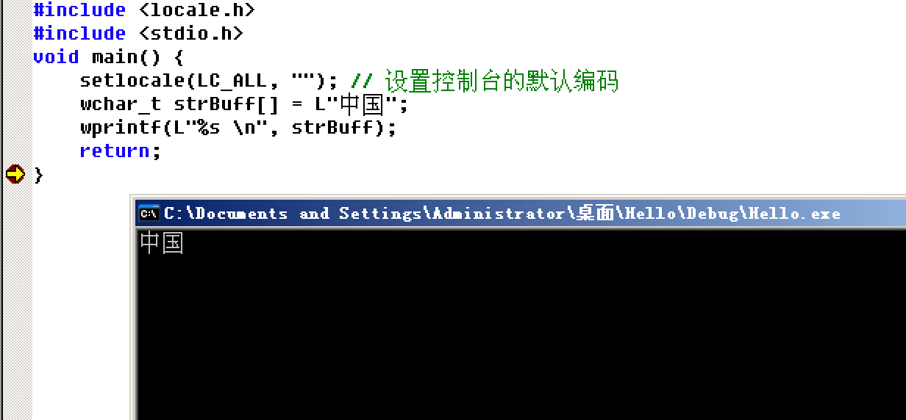
再一个例子就是字符串的长度：
char strBuff[] = "China";
wchar_t strBuff1[] = L"China";
strlen(strBuff); //取得多字节字符串中字符长度，不包含 00
wcslen(strBuff1); //取得多字节字符串中字符长度，不包含 00 00
Win32 API中的宽字符
了解什么是Win32 API
Win32 API就是Windows操作系统提供给我们的函数（应用程序接口），其主要存放在C:\Windows\System32（存储的DLL是64位）、C:\Windows\SysWOW64（存储的DLL是32位）下面的所有DLL文件（几千个）。
重要的DLL文件：
Kernel32.dll：最核心的功能模块，例如内存管理、进程线程相关的函数等；
User32.dll：Windows用户界面相关的应用程序接口，例如创建窗口、发送信息等；
GDI32.dll：全称是Graphical Device Interface（图形设备接口），包含用于画图和显示文本的函数。
在C语言中我们想要使用Win32 API的话直接在代码中包含windows.h这个头文件即可。
比如我们想要弹出一个提示窗口，Win32 API文档中弹窗API的格式如下：
int MessageBox( HWND hWnd, // handle to owner window LPCTSTR lpText, // text in message box LPCTSTR lpCaption, // message box title UINT uType // message box style);这个代码可能看起来非常可怕，好像我们都没有接触过，但实际上其不是什么新的类型，所谓的新的类型无非就是给原有的类型重新起了一个名字，这样做是为了将所有类型统一化，便于读写，如果涉及到跨平台的话将原来的类型修改一下就好了，无需对代码进行重写。
例如以上代码中的类型LPCTSTR，实际上我们跟进一下代码（选中F12）会发现其本质就是const char *这个类型，只不过是换了一个名字罢了。
常用的数据类型在Win32中都重新起了名字：

在Win32中使用字符串
字符类型：
CHAR strBuff[] = "中国"; // char
WCHAR strBuff[] = L"中国"; // wchar_t
TCHAR strBuff[] = TEXT("中国"); // TCHAR 根据当前项目的编码自动选择char还是wchar_t，在Win32中推荐使用这种方式
字符串指针:
PSTR strPoint = "中国"; // char*
PWSTR strPoint = L"中国"; // wchar_t*
PTSTR strPoint = TEXT("中国"); // PTSTR 根据当前项目的编码自动选择如char*还是wchar_t*，在Win32中推荐使用这种方式
使用Win32 API弹框
之前我们了解到Win32 API中的弹框，其名称为MessageBox，其实际上本质就是MessageBoxW和MessageBoxA：
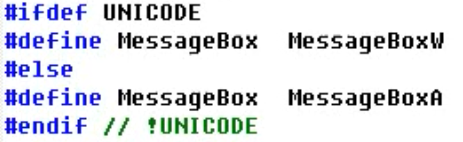
MessageBoxA只接受ASCII编码的参数，而MessageBoxW则只接受Unicode编码的参数。
从本质上来讲，Windows字符串都是宽字符的，所以使用MessageBoxW这种方式性能会更好一些，因为当你使用MessageBoxA的时候，在到内核的时候（系统底层）其会转化Unicode，所以性能相对差一些。
弹框调用如下：
CHAR strTitle[] = "Title";CHAR strContent[] = "Hello World!";MessageBoxA(0, strContent, strTitle, MB_OK);WCHAR strTitle[] = L"Title";WCHAR strContent[] = L"Hello World!";MessageBoxW(0, strContent, strTitle, MB_OK);TCHAR strTitle[] = TEXT("Title");TCHAR strContent[] = TEXT("Hello World!");MessageBox(0, strContent, strTitle, MB_OK);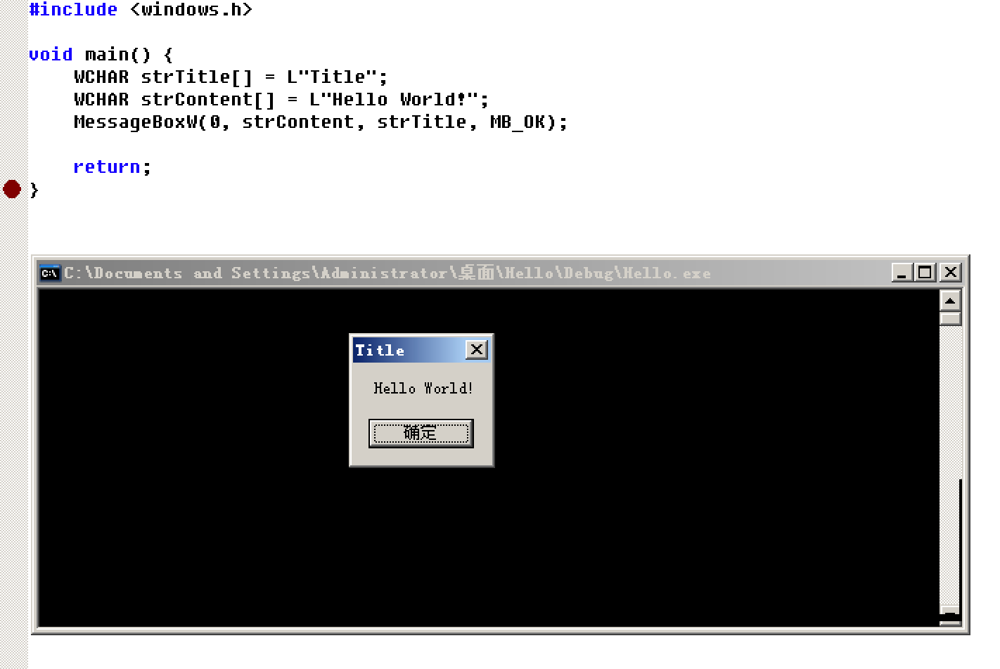
进程的创建过程
什么是进程
程序所需要的资源（数据、代码...）是由进程提供的；进程是一种空间上的概念，它的责任就是提供资源，至于资源如何使用，与它无关。
每一个进程都有自己的一个4GB大小的虚拟空间，也就是从0x0-0xFFFFFFFF这个范围。
进程内存空间的地址划分如下，每个进程的内核是同一份（高2G），只有其他三个分区是进程独有的（低2G），而只有用户模式区是我们使用的范围：
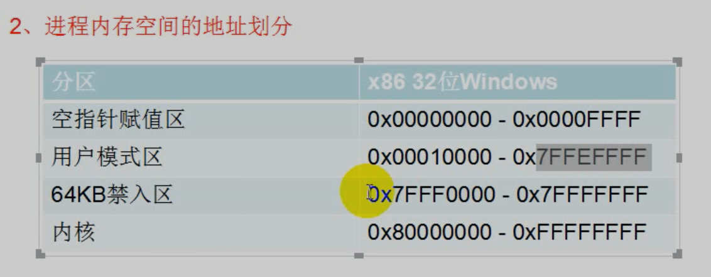
进程也可以理解为是一对模块组成的，我们可以使用OD打开一个进程看一下：
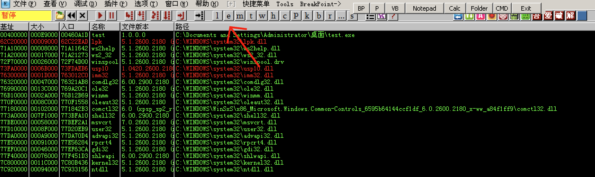
这里面有很多的模块，每个模块都是一个可执行文件，它们遵守相同的格式，即PE结构，所以我们也可以理解进程就是一堆PE组合。
进程的创建
我们需要知道任何进程都是别的进程创建的，当我们在Windows下双击打开一个文件，实际上就是explore.exe这个进程创建的我们打开文件的进程，其使用的方法就是：CreateProcess()
进程创建的过程也就是CreateProcess函数：
映射EXE文件（低2G）
创建内核对象EPROCESS（高2G）
映射系统DLL（ntdll.dll）
创建线程内核对象RTHREAD（高2G）
系统启动线程：
映射DLL（ntdll.LdrInitializeThunk）
线程开始执行
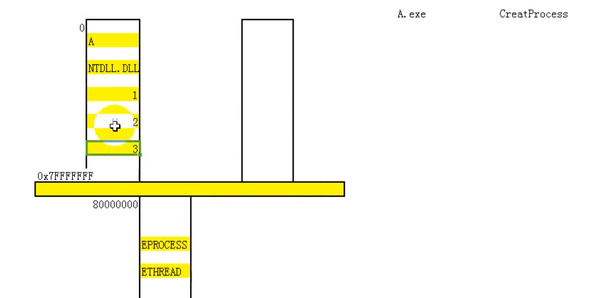
如上图就是打开A.exe的创建过程图，进程是空间上的概念，只用于提供代码和数据资源等等...而想要使用这些资源的是线程，每个进程至少需要一个线程。
创建进程
创建进程的函数是CreateProcess()，这个函数的使用方法如下：
BOOL CreateProcess( LPCTSTR lpApplicationName, // name of executable module 进程名（完整文件路径） LPTSTR lpCommandLine, // command line string 命令行传参 LPSECURITY_ATTRIBUTES lpProcessAttributes, // SD 进程句柄 LPSECURITY_ATTRIBUTES lpThreadAttributes, // SD 线程句柄 BOOL bInheritHandles, // handle inheritance option 句柄 DWORD dwCreationFlags, // creation flags 标志 LPVOID lpEnvironment, // new environment block 父进程环境变量 LPCTSTR lpCurrentDirectory, // current directory name 父进程目录作为当前目录，设置目录 LPSTARTUPINFO lpStartupInfo, // startup information 结构体详细信息（启动进程相关信息） LPPROCESS_INFORMATION lpProcessInformation // process information 结构体详细信息（进程ID、线程ID、进程句柄、线程句柄）);本章节对CreateProcess函数的了解就是前2个参数和后2个参数，前两个参数：lpApplicationName、lpCommandLine，第一个是需要启动的进程文件路径，第二个是命令行参数，如果你启动的进程有参数的可以可以传入。
命令行参数是指在CMD命令行下运行程序所需要提供的参数，例如我们的main入口函数：
int main(int argc, char* argv[]){ printf("%s - %s", argv[0], argv[1]); return 0;}其函数传参char* argv[]就是命令行参数，要使用的话就是argv[0]则表示程序本身，其余往后则是参数，argv[1]、argv[2]...等等：

所以我们要使用CreateProcess函数创建进程的话，如果需要提供命令行参数则需要填写第二个参数lpCommandLine：
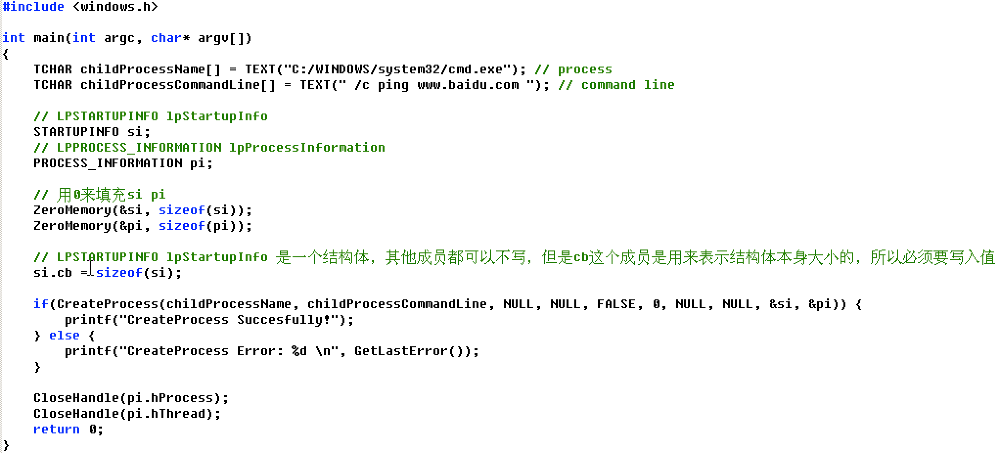
#include <windows.h>#include <stdlib.h>int main(int argc, char* argv[]){ TCHAR childProcessName[] = TEXT("C:/WINDOWS/system32/cmd.exe"); TCHAR childProcessCommandLine[] = TEXT(" /c ping 127.0.0.1"); STARTUPINFO si; PROCESS_INFORMATION pi; ZeroMemory(&si, sizeof(si)); ZeroMemory(&pi, sizeof(pi)); si.cb = sizeof(si); if(CreateProcess(childProcessName, childProcessCommandLine, NULL, NULL, FALSE, 0, NULL, NULL, &si, &pi)) { printf("CreateProcess Successfully! \n"); } else { printf("CreateProcess Error: %d \n", GetLastError()); } CloseHandle(pi.hProcess); CloseHandle(pi.hThread); system("pause"); return 0;}如上图所示代码，首先我定义了进程路径、进程命令行参数，其次创建了si、pi两个结构体，然后使用ZeroMemory函数用0填充结构体数据，再给si.cb成员赋值当前结构体大小（为什么需要？这是因为Windows会有很多个版本，便于未来更新换代）；最后CreateProcess函数创建进程，由于CreateProcess函数本身返回值是布尔类型的，所以使用if来判断，如果出问题则使用GetLastError函数来获取问题编号，具体编号对应什么内容可以参考百度百科：https://baike.baidu.com/item/GetLastError/4278820?fr=aladdin
在创建完进程之后需要关闭进程，但是我们所知道，每个进程至少有一个线程，所以我们也要关闭线程，使用CloseHandle函数来关闭。
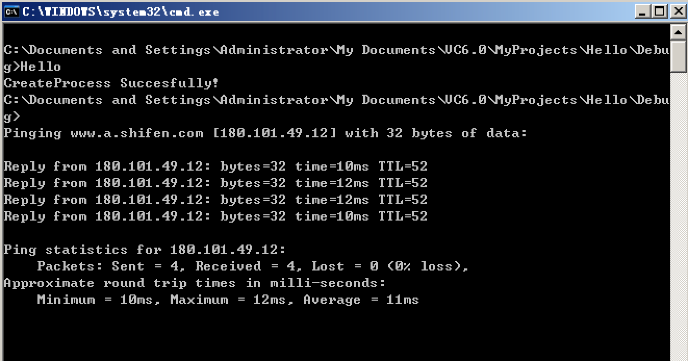
课外扩展-反调试(STARTUPINFO结构体)
CreateProcess()函数创建进程，其有一个参数是STARTUPINFO结构体，这个参数是进程启动的一些信息，我们一开始会将其ZeroMemory()函数处理，填充0，那么在运行的时候是否还都是0呢？或者说在载入调试工具的时候所有成员是否都是0呢？
首先我们来看一下STARTUPINFO结构体的成员：
typedef struct _STARTUPINFOA { DWORD cb; LPSTR lpReserved; LPSTR lpDesktop; LPSTR lpTitle; DWORD dwX; DWORD dwY; DWORD dwXSize; DWORD dwYSize; DWORD dwXCountChars; DWORD dwYCountChars; DWORD dwFillAttribute; DWORD dwFlags; WORD wShowWindow; WORD cbReserved2; LPBYTE lpReserved2; HANDLE hStdInput; HANDLE hStdOutput; HANDLE hStdError;} STARTUPINFOA, *LPSTARTUPINFOA;将这几个DWORD类型的成员打印一下看看，通过GetStartupInfo函数来获取信息：
#include "stdafx.h"#include <windows.h>#include <stdlib.h>int main(int argc, char* argv[]){ STARTUPINFO si; ZeroMemory(&si, sizeof(si)); si.cb = sizeof(si); GetStartupInfo(&si); printf("%d %d %d %d %d %d %d %d\n", si.dwX, si.dwY, si.dwXSize, si.dwYSize, si.dwXCountChars, si.dwYCountChars, si.dwFillAttribute, si.dwFlags); system("pause"); return 0;}正常打开（P1）和在DTDebug调试工具（P2）中打开：
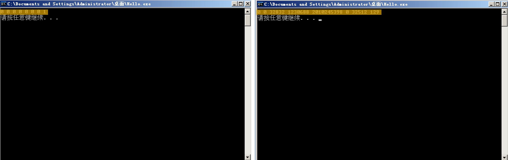
我们可以很清楚的看见了几个值在调试工具中打开发生变化：si.dwXSize, si.dwYSize, si.dwXCountChars, si.dwFillAttribute, si.dwFlags
所以我们可以根据这几个值来判断从而进行反调试：

句柄表
在上一章节中，我们了解到了CreateProcess()函数创建进程会有一个结构体LPPROCESS_INFORMATION lpProcessInformation，这个结构体会有进程和线程的ID、句柄信息，那么什么是ID？什么是句柄？
内核对象
什么是内核对象
首先我们来了解一下内核对象，以后会经常与内核对象打交道，例如进程、线程、文件、互斥体、事件等等在内核都有一个对应的结构体，这些结构体都由内核负责管理，所以我们都可以称之为内核对象（当我们创建一个进程，在内核层（高2G）就会创建一个结构体EPROCESS...）。

记不住没关系，我们可以在MSDN Library中搜索CloseHandle这个函数，它是用来关闭句柄的，暂时先不用管其原理，我们只要知道它所支持关闭就都是内核对象：
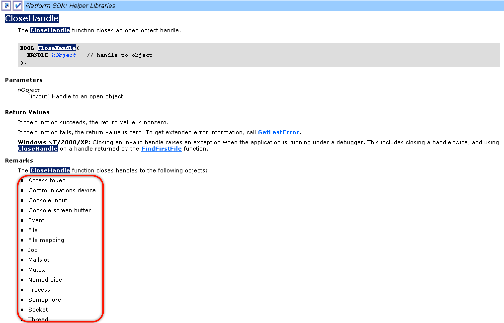
管理内核对象
当我们使用如下图所示的函数创建时，会在内核层创建一个结构体，而我们该如何管理这些结构体呢？或者说如何使用这些结构体呢？其实很好解决，我们可以通过内核结构体地址来管理，但是这样做存在问题：应用层很有可能操作不当导致修改啦内核结构体的地址，我们写应用层代码都知道访问到一个不存在的内存地址就会报错，而如果访问到一个内核地址是错误的，微软系统下则直接会蓝屏。

微软为了避免这种情况的发生，所以其不会讲内核结构体的地址暴露给应用层，也就是说没法通过这种方式来直接管理。
进程句柄表
没法直接管理内核对象，这时候句柄表就诞生了，但是需要注意的是，只有进程才会有句柄表，并且每一个进程都会有一个句柄表。
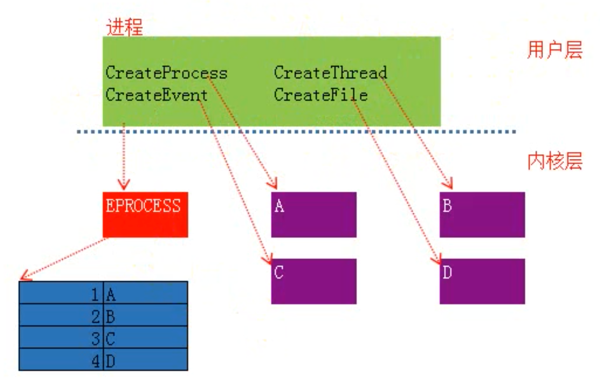
句柄本质上就一个防火墙，将应用层、内核层隔离开来，通过句柄就可以控制进程内核结构体，我们得到所谓句柄的值实际上就是句柄表里的一个索引。
多进程共享一个内核对象
如下图所示，A进程通过CreateProcess函数创建了一个内核对象；B进程通过OpenProcess函数可以打开别人创建好的一个进程，也就是可以操作其的内核对象；A进程想要操作内核对象就通过其对应的句柄表的句柄（索引）来操作；B进程操作这个内核对象也是通过它自己的句柄表的句柄（索引）来操作内核对象。（需要注意的是：句柄表是一个私有的，句柄值就是进程自己句柄表的索引）

在之前的例子中我们提到了CloseHandle这个函数是用来关闭进程、线程的，其实它的本质就是释放句柄，但是并不代表执行了这个函数，创建的内核对象就会彻底消失；如上图中所示内核对象存在一个计数器，目前是2，它的值是根据调用A的次数来决定的，如果我们只是在A进程中执行了CloseHandle函数，内核对象并不会消失，因为进程B还在使用，而只有进程B也执行了CloseHandle函数，这个内核对象的计数器为0，就会关闭消失了。
最后：注意，以上所述特性适合于除了线程以外的所有内核对象，创建进程，同时也会创建线程，如果你想把线程关闭，首先需要CloseHandle函数要让其计数器为0，其次需要有人将其关闭，所以假设我们创建了一个IE进程打开了一个网站，如果我们只是在代码中使用了CloseHandle函数，这样IE浏览器并不会关闭，需要我们手动点击窗口的关闭按钮才行（只有线程关闭了，进程才会关闭）。
句柄是否"可以"被继承
除了我们上述的方式可以进行共享内核对象以外，Windows还设计了一种方式来提供我们共享内核对象，我们先来了解一下句柄是否"可以"被继承。
如下图所示（句柄表是有三列的，分别是句柄值、内核结构体地址、句柄是否可以被继承），比如说我们在A进程（父进程）创建了4个内核对象：
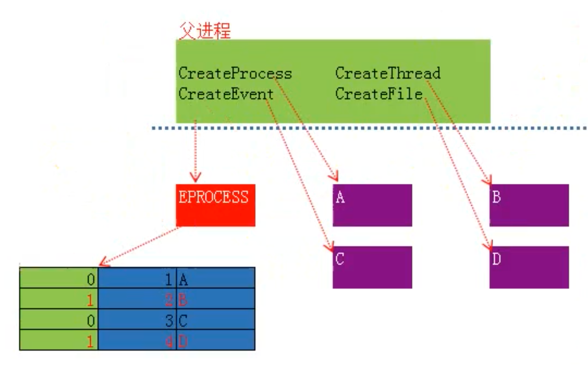
这四个函数都有一个参数LPSECURITY_ATTRIBUTES lpThreadAttributes，通过这个参数我们可以判断函数是否创建的是内核对象。
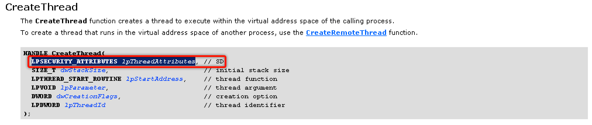
我们可以跟进看一下这个参数，它就是一个结构体：
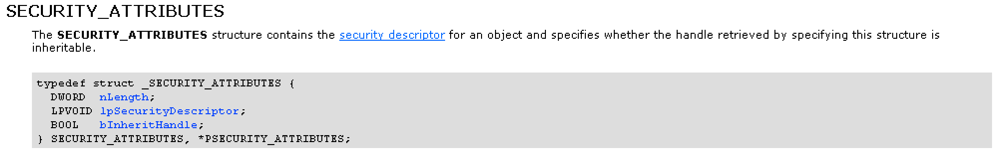
结构体成员分别是：1.结构体长度；2.安全描述符；3.句柄是否被继承。
第一个成员我们见怪不怪了，在Windows设计下都会有这样一个成员；第二个安全描述符，这个对我们来说实际上没有任何意义，一般留空就行，默认它会遵循父进程的来，其主要作用就是描述谁创建了该对象，谁有访问、使用该对象的权限。
第三个成员是我们重点需要关注的，因为其决定了句柄是否可以被继承，如下图所示，我们让CreateProcess函数创建的进程、线程句柄可以被继承：
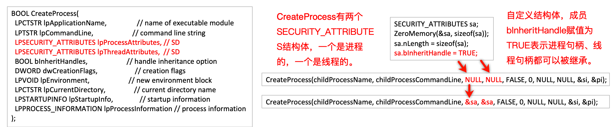
句柄是否"允许"被继承
我们可以让句柄被继承，但也仅仅是可以，要真正完成继承，或者说我们允许子进程继承父进程的句柄，这时候就需要另外一个参数了。
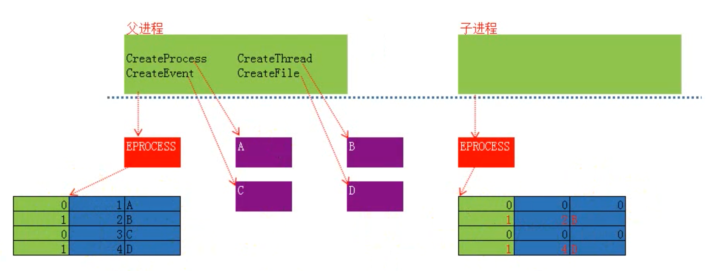
我们还是以CreateProcess函数举例，其有一个参数BOOL bInheritHandles，这个参数决定了是否允许创建的子进程继承句柄：

只有这个参数设置为TRUE时，我们创建的子进程才允许继承父进程的句柄。
进程相关API
ID与句柄
如果我们成功创建了一个进程，CreateProcess函数会给我们返回一个结构体，包含四个数据：进程编号（ID）、进程句柄、线程编号（ID）、线程句柄。
进程ID其实我们早就见过了，通常我们称之为PID，在任务管理器的进程栏下就可以很清楚的看见：

每个进程都有一份私有的句柄表，而操作系统也有一份句柄表，我们称之为全局句柄表，这张表里包含了所有正在运行的进程、线程：

PID我们就可以理解为是全局句柄表中的一个索引，那么PID和句柄的区别就很容易看出来来了，PID是全局的，在任何进程中都有意义，都可以使用，而句柄则是局部的、私有的；PID是唯一的，绝对不可能出现重复的存在，但是当进程消失，那么这个PID就有可能会分给另外一个进程。（PID不是句柄，但是可以通过PID获得到全局句柄表中其对应的句柄）
TerminateProcess函数
我们可以来论证一下如上所述的概念，首先A进程打开IE浏览器，然后获取进程ID和句柄：
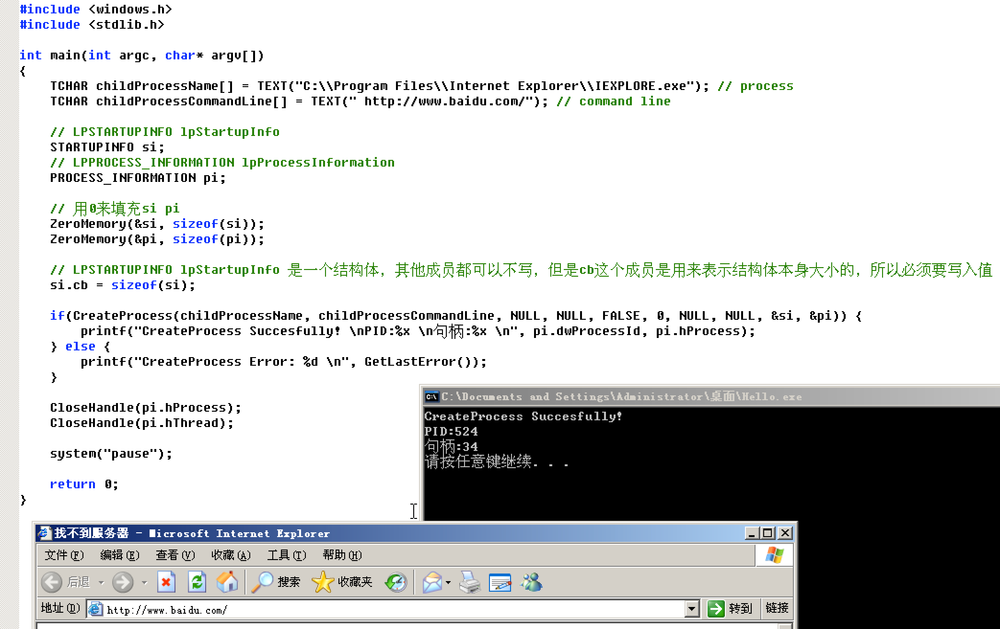
其次B进程使用TerminateProcess函数来终止A进程，首先使用句柄信息终止：
// TerminateProcess函数BOOL TerminateProcess( HANDLE hProcess, // handle to the process 句柄 UINT uExitCode // exit code for the process 退出代码);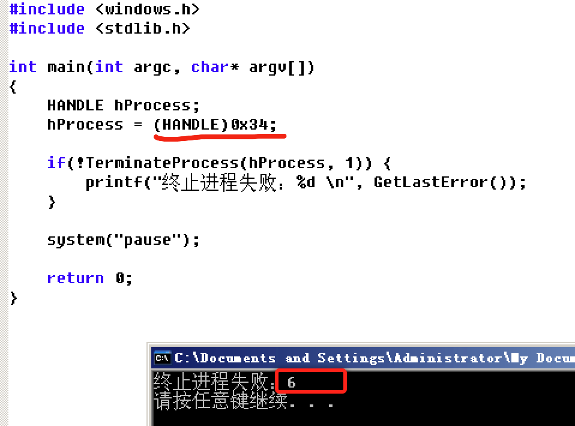
TerminateProcess函数是用来终止进程的，具体的可以参考MSDN Library，在这里我们很清楚的可以看见终止进程失败了，这个错误编号的意思就是句柄无效，那么就论证了句柄是私有的，其他进程无法根据这个句柄来终止进程，但是我们想要真正的关闭这个进程，那就需要借助PID来获取句柄了，具体细节如下。
OpenProcess函数
了解了TerminateProcess函数后，我们想要真正的去关闭一个进程，需要借助OpenProcess函数，这个函数是用来打开进程对象的：
HANDLE OpenProcess( DWORD dwDesiredAccess, // access flag 你希望的访问权限 BOOL bInheritHandle, // handle inheritance option 是否可以被继承 DWORD dwProcessId // process identifier 进程ID);
如下代码所示，我通过PID打开进程（OpenProcess函数），拥有所有权，不继承句柄表，当OpenProcess函数执行完成之后，我就获得一个句柄，通过这个句柄我就可以终止进程：
HANDLE hProcess;hProcess = OpenProcess(PROCESS_ALL_ACCESS, FALSE, 0x524);if(!TerminateProcess(hProcess, 0)) { printf("终止进程失败：%d \n", GetLastError());}以挂起的形式创建进程
CreateProcess函数的所有参数都需要了解一下，现在我们来看一下第六个参数DWORD dwCreationFlags：
BOOL CreateProcess( LPCTSTR lpApplicationName, // name of executable module LPTSTR lpCommandLine, // command line string LPSECURITY_ATTRIBUTES lpProcessAttributes, // SD LPSECURITY_ATTRIBUTES lpThreadAttributes, // SD BOOL bInheritHandles, // handle inheritance option DWORD dwCreationFlags, // creation flags <--这个参数 LPVOID lpEnvironment, // new environment block LPCTSTR lpCurrentDirectory, // current directory name LPSTARTUPINFO lpStartupInfo, // startup information LPPROCESS_INFORMATION lpProcessInformation // process information);当我们创建一个控制台进程时，会发现子进程和父进程都在同一个命令行控制台中：

而如果我们想要区分的话就需要借助dwCreationFlags这个参数，将其修改为CREATE_NEW_CONSOLE即可：
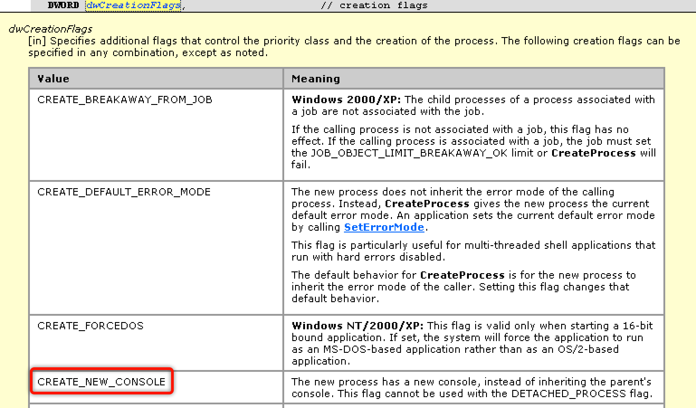
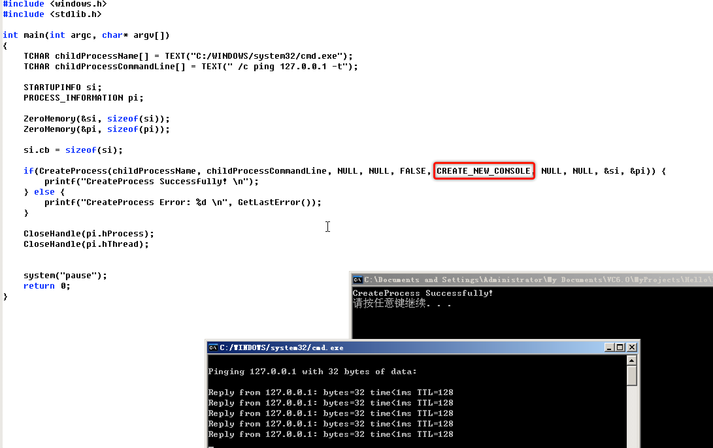
但是这个并不是我们最重要的，或者说不是其真正有意义的参数，有意义的是参数值为CREATE_SUSPENDED，也就是以挂起的形式创建进程。
而如果是以挂起的方式创建进程，那么进程的创建过程就会发生变化：

那也就说明了一点，挂起本质上挂起的是线程，进程还是会创建的，所以，最终如果想恢复的话也是恢复线程：
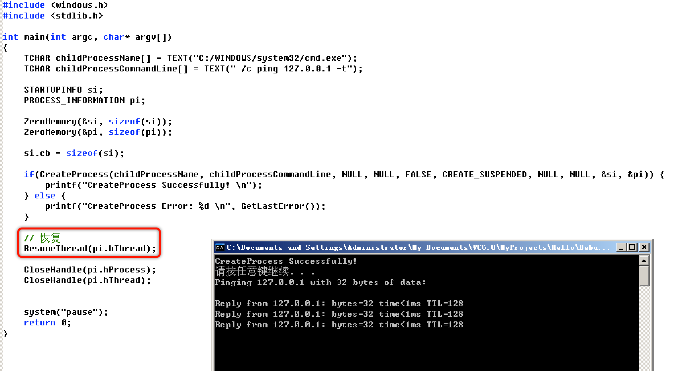
模块目录与工作目录
通过GetModuleFileName和GetCurrentDirectory函数可以分别获得当前模块目录和当前工作目录：
char strModule[256];GetModuleFileName(NULL,strModule, 256); // 得到当前模块目录，当前exe所在的路径，包含exe文件名char strWork[1000];GetCurrentDirectory(1000, strWork); // 获取当前工作目录printf("模块目录：%s \n工作目录：%s \n", strModule, strWork);需要注意的是工作目录是可以修改的，我们可以通过CreateProcess函数来创建一个进程，并且修改其工作目录，这是CreateProcess函数的第八个参数LPCTSTR lpCurrentDirectory。
假设我们有这样一个需求：打开当前工作目录下的1.txt文件：
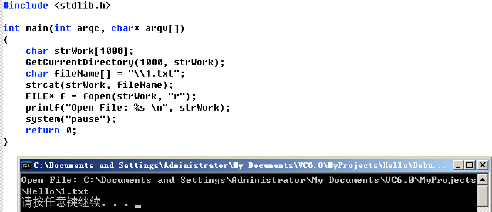
而这时候我们可以通过CreateProcess函数修改工作路径，让其读取我们指定工作目录的文件：
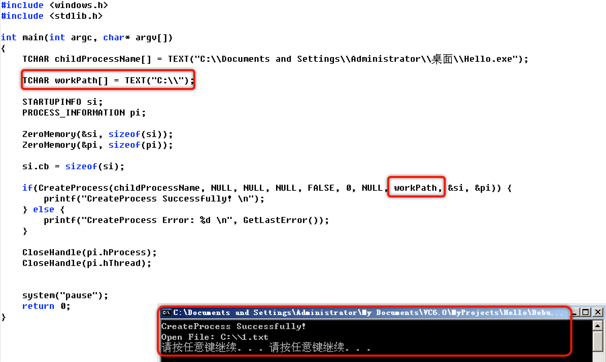
其他进程相关API
获取当前进程ID（PID）：GetCurrentProcessId
获取当前进程句柄：GetCurrentProcess
获取命令行：GetCommandLine
获取启动信息：GetStartupInfo
遍历进程ID：EnumProcesses
快照：CreateToolhelp32Snapshot
创建线程
什么是线程
线程是附属在进程上的执行实体，是代码的执行流程；
一个进程可以包含多个线程（一个进程至少要包含一个线程，进程是空间上的概念，线程是时间上的概念）。
通过Windows任务管理器我们也可以很清晰的看见每个进程当前的线程数量：
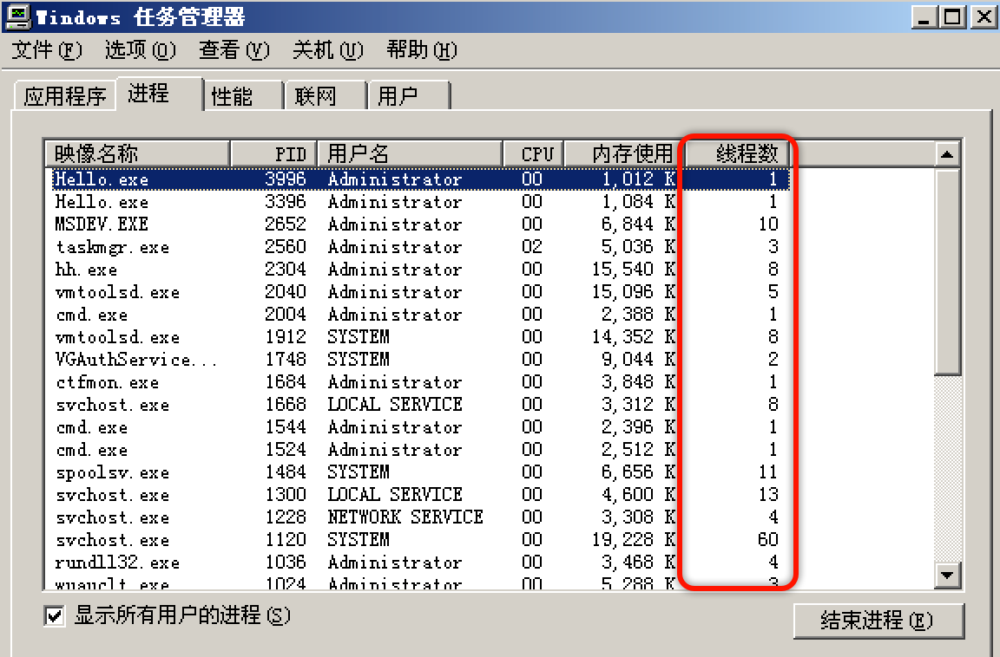
有几个线程就表示着有几个代码在执行，但是它们并不一定是同时执行，例如单核的CPU情况下是不存在多线程的，线程的执行是有时间顺序的，但是CPU切换的非常快，所以给我们的感觉和多核CPU没什么区别。
创建线程
创建线程使用CreateThread函数，其语法格式如下：
HANDLE CreateThread( // 返回值是线程句柄 LPSECURITY_ATTRIBUTES lpThreadAttributes, // SD 安全属性，包含安全描述符 SIZE_T dwStackSize, // initial stack size 初始堆栈 LPTHREAD_START_ROUTINE lpStartAddress, // thread function 线程执行的函数代码 LPVOID lpParameter, // thread argument 线程需要的参数 DWORD dwCreationFlags, // creation option 标识，也可以以挂起形式创建线程 LPDWORD lpThreadId // thread identifier 返回当前线程ID);线程执行函数的语法要求如下：
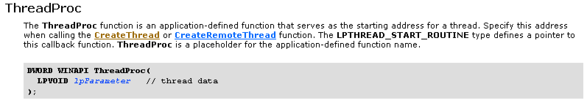
我们尝试创建一个线程执行for循环，如下图：

#include <windows.h>// 线程执行的函数有语法要求，参考MSDN LibraryDWORD WINAPI ThreadProc(LPVOID lpParameter) { // 要执行的代码 for(int i = 0; i < 100; i++) { Sleep(500); printf("++++++ %d \n", i); } return 0;}int main(int argc, char* argv[]){ // 创建线程 CreateThread(NULL, NULL, ThreadProc, NULL, 0, NULL); // 要执行的代码 for(int i = 0; i < 100; i++) { Sleep(500); printf("------ %d \n", i); } return 0; }线程间不会相互配合，而是各自执行自己的，如果想要配合就需要了解线程通信，这个后面会学习到。
向线程函数传递参数
向线程传递参数，如下图所示，我们想要自定义线程执行for循环的次数，将n传递进去，这时候需要注意参数传递到线程参数时在堆栈中存在，并且传递的时候需要强制转换一下：
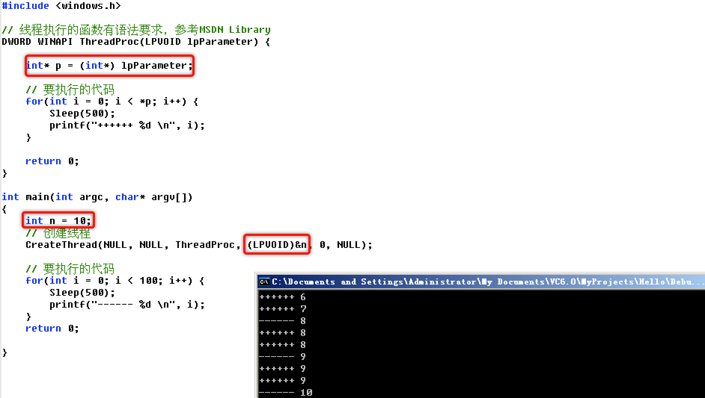
为了保证参数的生命周期，我们也可以将参数放在全局变量区：

线程控制
让线程停下来
Sleep函数
Sleep函数是让当前执行到本函数时延迟指定的毫秒之后再向下走，例如：
for(int i = 0; i < 100; i++) { Sleep(500); printf("------ %d \n", i);}SuspendThread函数
SuspendThread函数用于暂停（挂起）某个线程，当暂停后该线程不会占用CPU，其语法格式很简单，只需要传入一个线程句柄即可：
DWORD SuspendThread( HANDLE hThread // handle to thread);ResumeThread函数
ResumeThread函数用于恢复被暂停（挂起）的线程，其语法格式也很简单，只需要传入一个线程句柄即可：
DWORD ResumeThread( HANDLE hThread // handle to thread);需要注意的是，挂起几次就要恢复几次。
SuspendThread(hThread);SuspendThread(hThread);ResumeThread(hThread);ResumeThread(hThread);等待线程结束
WaitForSingleObject函数
WaitForSingleObject函数用于等待一个内核对象状态发生变更，那也就是执行结束之后，才会继续向下执行，其语法格式如下：
DWORD WaitForSingleObject( HANDLE hHandle, // handle to object 句柄 DWORD dwMilliseconds // time-out interval 等待超时时间（毫秒）);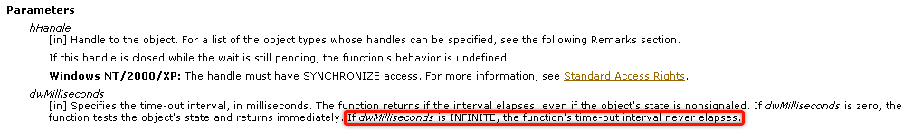
如果你想一直等待的话，可以将第二参数的值设置为INFINITE。
HANDLE hThread;hThread = CreateThread(NULL, NULL, ThreadProc, NULL, 0, NULL);WaitForSingleObject(hThread, INFINITE);printf("OK...");WaitForMultipleObjects函数
WaitForMultipleObjects函数与WaitForSingleObject函数作用是一样的，只不过它可以等待多个内核对象的状态发生变更，其语法格式如下：
DWORD WaitForMultipleObjects( DWORD nCount, // number of handles in array 内核对象的数量 CONST HANDLE *lpHandles, // object-handle array 内核对象的句柄数组 BOOL bWaitAll, // wait option 等待模式 DWORD dwMilliseconds // time-out interval 等待超时时间（毫秒）);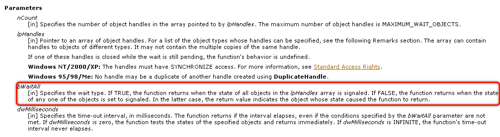
等待模式的值是布尔类型，一个是TRUE，一个是FALSE，TRUE就是等待所有对象的所有状态发生变更，FALSE则是等待任意一个对象的状态发生变更。
HANDLE hThread[2];hThread[0] = CreateThread(NULL, NULL, ThreadProc, NULL, 0, NULL);hThread[1] = CreateThread(NULL, NULL, ThreadProc, NULL, 0, NULL);WaitForMultipleObjects(2, hThread, TRUE, INFINITE);GetExitCodeThread函数
线程函数会有一个返回值（DWORD），这个返回值可以根据你的需求进行返回，而我们需要如何获取这个返回结果呢？这时候就可以使用GetExitCodeThread函数，其语法格式如下：
BOOL GetExitCodeThread( HANDLE hThread, // handle to the thread LPDWORD lpExitCode // termination status);
根据MSDN Library我们可以知道该函数的参数分别是线程句柄，而另一个则是out类型参数，这种类型则可以理解为GetExitCodeThread函数的返回结果。
HANDLE hThread;hThread = CreateThread(NULL, NULL, ThreadProc, NULL, 0, NULL);WaitForSingleObject(hThread, INFINITE);DWORD exitCode;GetExitCodeThread(hThread, &exitCode);printf("Exit Code: %d \n", exitCode);
需要注意的是这个函数应该搭配着如上所学的2个等待函数一起使用，不然获取到的值就不会是线程函数返回的值。
设置、获取线程上下文
线程上下文是指某一时间点CPU寄存器和程序计数器的内容，如果想要设置、获取线程上下文就需要先将线程挂起。
GetThreadContext函数
GetThreadContext函数用于获取线程上下文，其语法格式如下：
BOOL GetThreadContext( HANDLE hThread, // handle to thread with context 句柄 LPCONTEXT lpContext // context structure);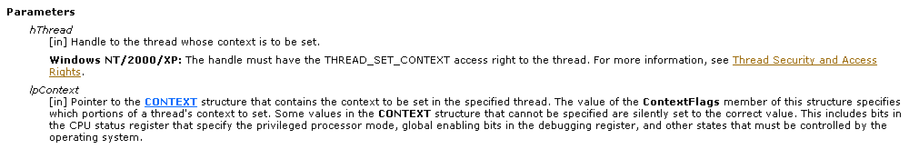
第一个参数就是线程句柄，这个很好理解，重点是第二个参数，其是一个CONTEXT结构体，该结构体包含指定线程的上下文，其ContextFlags成员的值指定了要设置线程上下文的哪些部分。
当我们将CONTEXT结构体的ContextFlags成员的值设置为CONTEXT_INTEGER时则可以获取edi、esi、ebx、edx、ecx、eax这些寄存器的值：
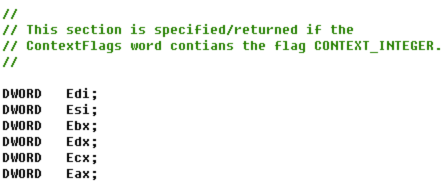
如下代码尝试获取：
HANDLE hThread;hThread = CreateThread(NULL, NULL, ThreadProc, NULL, 0, NULL);SuspendThread(hThread);CONTEXT c;c.ContextFlags = CONTEXT_INTEGER;GetThreadContext(hThread, &c);printf("%x %x \n", c.Eax, c.Ecx);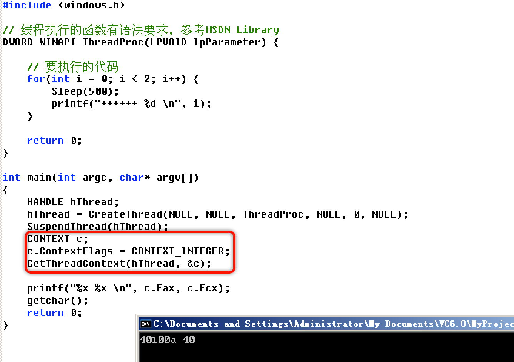
SetThreadContext函数
GetThreadContext函数是个设置修改线程上下文，其语法格式如下：
BOOL SetThreadContext( HANDLE hThread, // handle to thread CONST CONTEXT *lpContext // context structure);我们可以尝试修改Eax，然后再获取：
HANDLE hThread;hThread = CreateThread(NULL, NULL, ThreadProc, NULL, 0, NULL);SuspendThread(hThread);CONTEXT c;c.ContextFlags = CONTEXT_INTEGER;c.Eax = 0x123;SetThreadContext(hThread, &c);CONTEXT c1;c1.ContextFlags = CONTEXT_INTEGER;GetThreadContext(hThread, &c1);printf("%x \n", c1.Eax);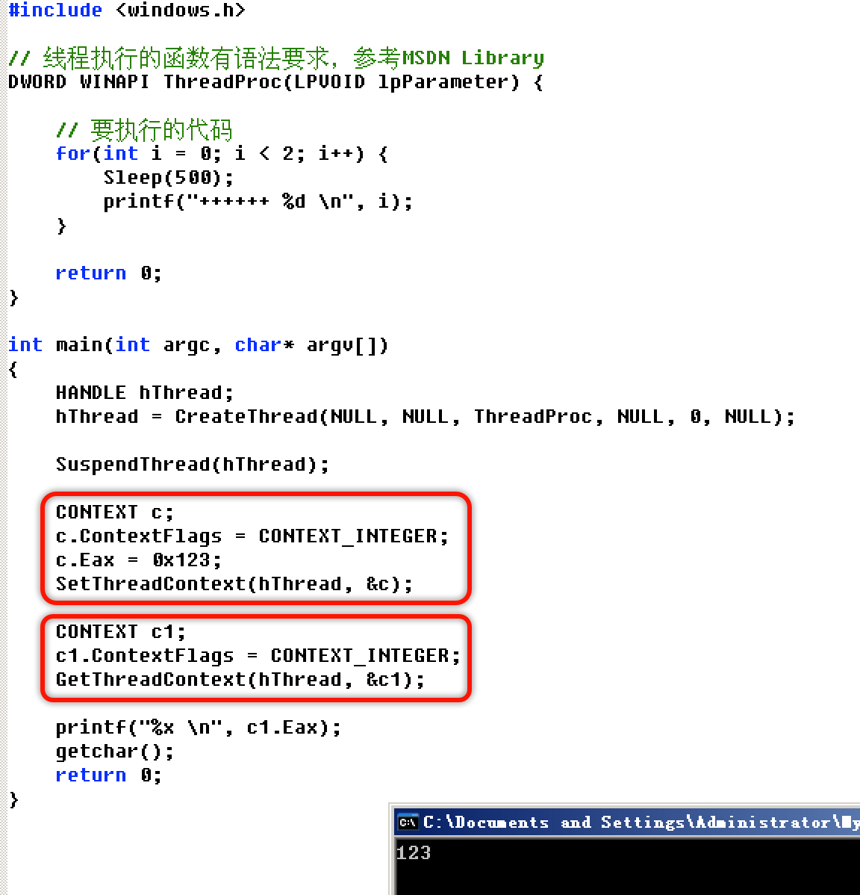
临界区
线程安全问题
每个线程都有自己的栈，局部变量是存储在栈中的，这就意味着每个进程都会有一份自己的“句柄变量”（栈），如果线程仅仅使用自己的“局部变量”那就不存在线程安全问题，反之，如果多个线程共用一个全局变量呢？那么在什么情况下会有问题呢？那就是当多线程共用一个全局变量并对其进行修改时则存在安全问题，如果仅仅是读的话没有问题。
如下所示代码，我们写了一个线程函数，该函数的作用就是使用全局变量，模拟的功能就是售卖物品，全局变量countNumber表示该物品的总是，其值是10，而如果有多个地方（线程）去卖（使用）这个物品（全局变量），则会出现差错：
#include <windows.h>int countNumber = 10;DWORD WINAPI ThreadProc(LPVOID lpParameter) { while (countNumber > 0) { printf("Sell num: %d\n", countNumber); // 售出-1 countNumber--; printf("Count: %d\n", countNumber); } return 0;}int main(int argc, char* argv[]){ HANDLE hThread; hThread = CreateThread(NULL, NULL, ThreadProc, NULL, 0, NULL); HANDLE hThread1; hThread1 = CreateThread(NULL, NULL, ThreadProc, NULL, 0, NULL); CloseHandle(hThread); getchar(); return 0;}如图，我们运行了代码，发现会出现重复售卖，并且到最后总数竟变成了-1：

出现这样的问题其本质原因是什么呢？因为多线程在执行的时候是同步进行的，并不是按照顺序来，所以就都会窒息，自然就会出现这种情况。
解决问题
想要解决线程安全问题，就需要引伸出一个概念：临界资源，临界资源表示对该资源的访问一次只能有一个线程；访问临界资源的那一段程序，我们称之为临界区。
那么我们如何实现临界区呢？第一，我们可以自己来写，但是这需要一定门槛，先不过多的去了解；第二，可以使用WIndows提供的API来实现。
实现临界区
首先会有一个令牌，假设线程1获取了这个令牌，那么这时候令牌则只为线程1所有，然后线程1会执行代码去访问全局变量，最后归还令牌；如果其他线程想要去访问这个全局变量就需要获取这个令牌，但当令牌已经被取走时则无法访问。
假设你自己来实现临界区，可能在判断令牌有没有被拿走的时候就又会出现问题，所以自己实现临界区还是有一定的门槛的。

线程锁
线程锁就是临界区的实现方式，通过线程锁我们可以完美解决如上所述的问题，其步骤如下所示：
创建全局变量：CRITICAL_SECTION cs;
初始化全局变量：InitializeCriticalSection(&cs);
实现临界区：进入 → EnterCriticalSection(&cs); 离开 → LeaveCriticalSection(&cs);
我们就可以这样改写之前的售卖物品的代码：
在使用全局变量开始前构建并进入临界区，使用完之后离开临界区：
#include <windows.h>CRITICAL_SECTION cs; // 创建全局变量int countNumber = 10;DWORD WINAPI ThreadProc(LPVOID lpParameter) { while (1) { EnterCriticalSection(&cs); // 构建临界区，获取令牌 if (countNumber > 0) { printf("Thread: %d\n", *((int*)lpParameter)); printf("Sell num: %d\n", countNumber); // 售出-1 countNumber--; printf("Count: %d\n", countNumber); } else { LeaveCriticalSection(&cs); // 离开临临界区，归还令牌 break; } LeaveCriticalSection(&cs); // 离开临临界区，归还令牌 } return 0;}int main(int argc, char* argv[]){ InitializeCriticalSection(&cs); // 使用之前进行初始化 int a = 1; HANDLE hThread; hThread = CreateThread(NULL, NULL, ThreadProc, (LPVOID)&a, 0, NULL); int b = 2; HANDLE hThread1; hThread1 = CreateThread(NULL, NULL, ThreadProc, (LPVOID)&b, 0, NULL); CloseHandle(hThread); getchar(); return 0;}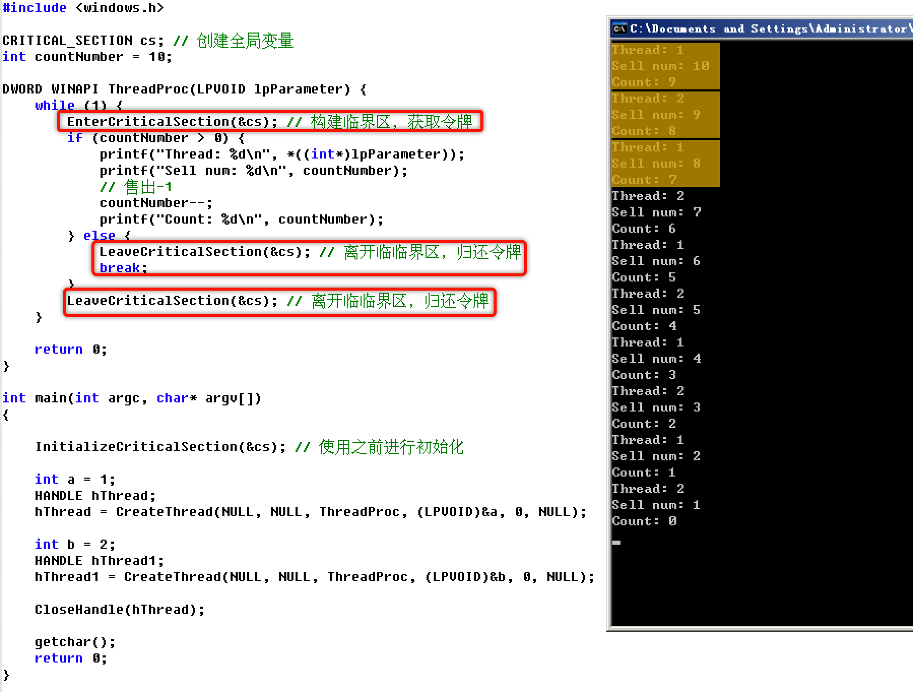
互斥体
内核级临界资源怎么办？
上一章中我们了解了使用线程锁来解决多个线程共用一个全局变量的线程安全问题；那么假设A进程的B线程和C进程的D线程，同时使用的是内核级的临界资源（内核对象：线程、文件、进程...）该怎么让这个访问是安全的？使用线程锁的方式明显不行，因为线程锁仅能控制同进程中的多线程。

那么这时候我们就需要一个能够放在内核中的令牌来控制，而实现这个作用的，我们称之为互斥体。
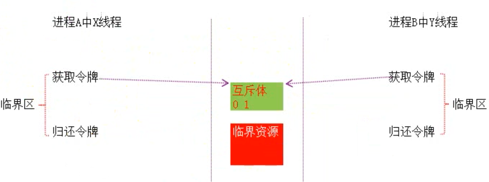
互斥体的使用
创建互斥体的函数为CreateMutex，该函数的语法格式如下：
HANDLE CreateMutex( LPSECURITY_ATTRIBUTES lpMutexAttributes, // SD 安全属性，包含安全描述符 BOOL bInitialOwner, // initial owner 是否希望互斥体创建出来就有信号，或者说就可以使用，如果希望的话就为FALSE；官方解释为如果该值为TRUE则表示当前进程拥有该互斥体所有权 LPCTSTR lpName // object name 互斥体的名字);我们可以模拟一下操作资源然后创建：
#include <windows.h>int main(int argc, char* argv[]){ // 创建互斥体 HANDLE cm = CreateMutex(NULL, FALSE, "XYZ"); // 等待互斥体状态发生变化，也就是有信号或为互斥体拥有者，获取令牌 WaitForSingleObject(cm, INFINITE); // 操作资源 for (int i = 0; i < 5; i++) { printf("Process: A Thread: B -- %d \n", i); Sleep(1000); } // 释放令牌 ReleaseMutex(cm); return 0;}我们可以运行两个进程来看一下互斥体的作用：
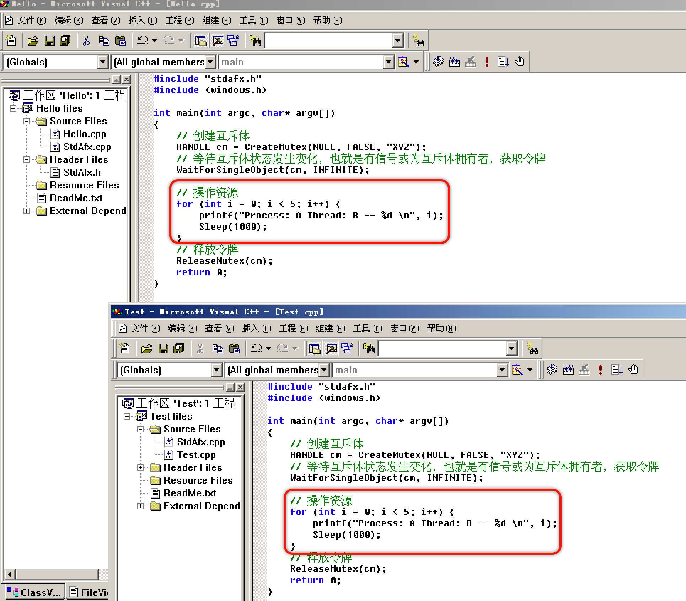
互斥体和线程锁的区别
线程锁只能用于单个进程间的线程控制
互斥体可以设定等待超时，但线程锁不能
线程意外结束时，互斥体可以避免无限等待
互斥体效率没有线程锁高
课外扩展-互斥体防止程序多开
CreateMutex函数的返回值MSDN Library的介绍是这样的：如果函数成功，返回值是一个指向mutex对象的句柄；如果命名的mutex对象在函数调用前已经存在，函数返回现有对象的句柄，GetLastError返回ERROR_ALREADY_EXISTS（表示互斥体以及存在）；否则，调用者创建该mutex对象；如果函数失败，返回值为NULL，要获得扩展的错误信息，请调用GetLastError获取。
所以我们可以利用互斥体来防止程序进行多开：
#include <windows.h>int main(int argc, char* argv[]){ // 创建互斥体 HANDLE cm = CreateMutex(NULL, TRUE, "XYZ"); // 判断互斥体是否创建失败 if (cm != NULL) { // 判断互斥体是否已经存在，如果存在则表示程序被多次打开 if (GetLastError() == ERROR_ALREADY_EXISTS) { printf("该程序已经开启了，请勿再次开启！"); getchar(); } else { // 等待互斥体状态发生变化，也就是有信号或为互斥体拥有者，获取令牌 WaitForSingleObject(cm, INFINITE); // 操作资源 for (int i = 0; i < 5; i++) { printf("Process: A Thread: B -- %d \n", i); Sleep(1000); } // 释放令牌 ReleaseMutex(cm); } } else { printf("CreateMutex 创建失败! 错误代码: %d\n", GetLastError()); } return 0;}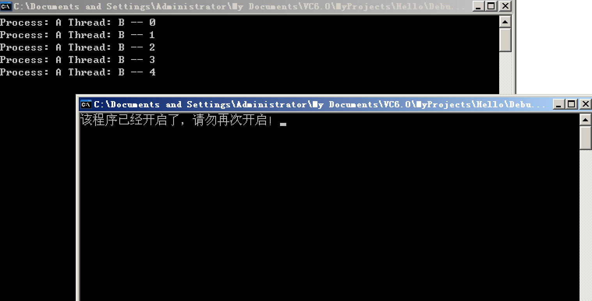
事件
事件本身也是一种内核对象，其也是是用来控制线程的。
通知类型
事件本身可以做为通知类型来使用，创建事件使用函数CreateEvent，其语法格式如下：
HANDLE CreateEvent( LPSECURITY_ATTRIBUTES lpEventAttributes, // SD 安全属性，包含安全描述符 BOOL bManualReset, // reset type 如果你希望当前事件类型是通知类型则写TRUE，反之FALSE BOOL bInitialState, // initial state 初始状态，决定创建出来时候是否有信号，有为TRUE，没有为FALSE LPCTSTR lpName // object name 事件名字);那么通知类型到底是什么？我们可以写一段代码来看一下：
#include <windows.h>HANDLE e_event;DWORD WINAPI ThreadProc(LPVOID lpParameter) { // 等待事件 WaitForSingleObject(e_event, INFINITE); printf("ThreadProc - running ...\n"); getchar(); return 0;}DWORD WINAPI ThreadProcB(LPVOID lpParameter) { // 等待事件 WaitForSingleObject(e_event, INFINITE); printf("ThreadProcB - running ...\n"); getchar(); return 0;}int main(int argc, char* argv[]){ // 创建事件 // 第二个参数，FALSE表示非通知类型通知，也就是互斥；TRUE则表示为通知类型 // 第三个参数表示初始状态没有信号 e_event = CreateEvent(NULL, TRUE, FALSE, NULL); // 创建2个线程 HANDLE hThread[2]; hThread[0] = CreateThread(NULL, NULL, ThreadProc, NULL, 0, NULL); hThread[1] = CreateThread(NULL, NULL, ThreadProcB, NULL, 0, NULL); // 设置事件为已通知，也就是设置为有信号 SetEvent(e_event); // 等待线程执行结束，销毁内核对象 WaitForMultipleObjects(2, hThread, TRUE, INFINITE); CloseHandle(hThread[0]); CloseHandle(hThread[1]); // 事件类型也是内核对象，所以也需要关闭句柄 CloseHandle(e_event); return 0;}如下图所示，我们运行了代码，会发现两个线程都执行了，而如果是之前我们使用互斥体的话则线程A先执行然后线程B等待线程A归还令牌（执行结束）才会执行，这里我们在线程函数的最后使用了getchar()阻止了线程执行结束，但是两个线程还是都执行了：

我们修改下创建事件函数的参数为互斥，来看一下，那么互斥和通知类型的区别一下就很明显的展示出来了：

那么通知类型实现的原理是什么呢？实际上这个跟WaitForSingleObject函数有关，我们可以看下MSDN Library对该函数的介绍：
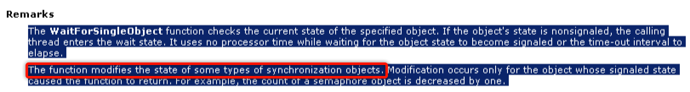
可以很清晰的看见最后说到，该函数会修改内核对象的状态，所以通知类型的原理就很简单了，就是当事件对象为通知类型时该函数就不会去修改对象的状态，这个状态我们可以理解成是占用，当WaitForSingleObject函数判断为非占用时就修改内核对象的状态为占用然后向下执行，而其他线程想使用就需要等待，这就是互斥的概念。
线程同步
线程互斥：线程互斥是指对于共享的进程系统资源，在各单个线程访问时的排它性；当有若干个线程都要使用某一共享资源时，任何时刻最多只允许一个线程去使用，其它要使用该资源的线程必须等待，直到占用资源者释放该资源。
线程同步： 线程同步是指线程之间所具有的一种制约关系，一个线程的执行依赖另一个线程的消息，当它没有得到另一个线程的消息时应等待，直到消息到达时才被唤醒；同步的前提是互斥，其次就是有序，互斥并不代表A线程访问临界资源后就一定是B线程再去访问，也有可能是A线程，这就是属于无序的状态，所以同步就是互斥加上有序。
生产者与消费者
想要证明事件和互斥体最本质的区别，我们可以使用生产者与消费者模型来举例子，那么这个模型是什么意思呢？
生产者消费者模式就是通过一个容器来解决生产者和消费者的强耦合（依赖性）问题。生产者和消费者彼此之间不直接通讯，而通过阻塞队列来进行通讯，所以生产者生产完数据之后不用等待消费者处理，直接扔给阻塞队列，消费者不找生产者要数据，而是直接从阻塞队列里取，阻塞队列就相当于一个缓冲区，平衡了生产者和消费者的处理能力。
我们就可以理解为生产者生产一个物品，将其放进容器里，然后消费者从容器中取物品进行消费，就这样“按部就班”下去...
互斥体
首先我们来写一段互斥体下的生产者与消费者的代码：
#include "stdafx.h"#include <windows.h>// 容器int container;// 次数int count = 10;// 互斥体HANDLE hMutex;// 生产者DWORD WINAPI ThreadProc(LPVOID lpParameter) { for (int i = 0; i < count; i++) { // 等待互斥体，获取令牌 WaitForSingleObject(hMutex, INFINITE); // 获取当前进程ID int threadId = GetCurrentThreadId(); // 生产存放进容器 container = 1; printf("Thread: %d, Build: %d \n", threadId, container); // 释放令牌 ReleaseMutex(hMutex); } return 0;}// 消费者DWORD WINAPI ThreadProcB(LPVOID lpParameter) { for (int i = 0; i < count; i++) { // 等待互斥体，获取令牌 WaitForSingleObject(hMutex, INFINITE); // 获取当前进程ID int threadId = GetCurrentThreadId(); printf("Thread: %d, Consume: %d \n", threadId, container); // 消费 container = 0; // 释放令牌 ReleaseMutex(hMutex); } return 0;}int main(int argc, char* argv[]){ // 创建互斥体 hMutex = CreateMutex(NULL, FALSE, NULL); // 创建2个线程 HANDLE hThread[2]; hThread[0] = CreateThread(NULL, NULL, ThreadProc, NULL, 0, NULL); hThread[1] = CreateThread(NULL, NULL, ThreadProcB, NULL, 0, NULL); WaitForMultipleObjects(2, hThread, TRUE, INFINITE); CloseHandle(hThread[0]); CloseHandle(hThread[1]); CloseHandle(hMutex); return 0;}运行结果如下图所示：
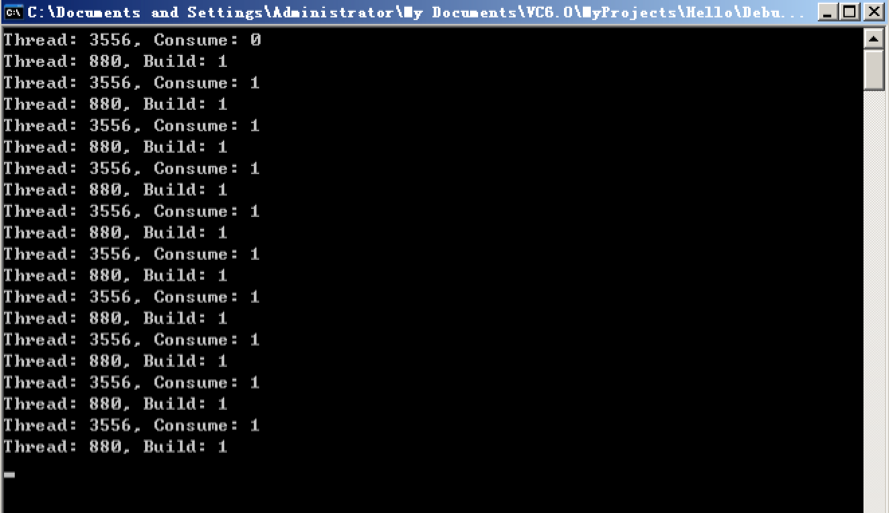
我们可以清晰的看见结果并不是我们想要的，生产一次消费一次的有序进行，甚至还出现了先消费后生产的情况，这个问题我们可以去修改代码解决：
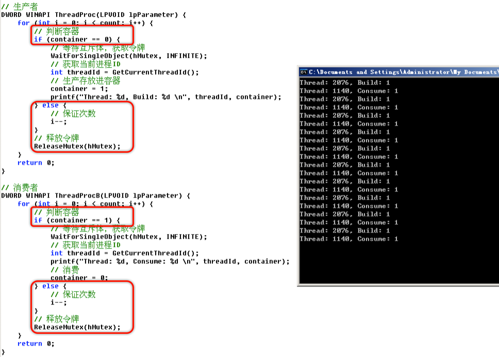
这样虽然看似解决了问题，但是实际上也同样会出现一种问题，那就是for循环执行了不止10次，这样会倒是过分的占用计算资源。
事件
我们使用事件的方式就可以更加完美的解决这一需求：
#include <windows.h>// 容器int container = 0;// 次数int count = 10;// 事件HANDLE eventA;HANDLE eventB;// 生产者DWORD WINAPI ThreadProc(LPVOID lpParameter) { for (int i = 0; i < count; i++) { // 等待事件，修改事件A状态 WaitForSingleObject(eventA, INFINITE); // 获取当前进程ID int threadId = GetCurrentThreadId(); // 生产存放进容器 container = 1; printf("Thread: %d, Build: %d \n", threadId, container); // 给eventB设置信号 SetEvent(eventB); } return 0;}// 消费者DWORD WINAPI ThreadProcB(LPVOID lpParameter) { for (int i = 0; i < count; i++) { // 等待事件，修改事件B状态 WaitForSingleObject(eventB, INFINITE); // 获取当前进程ID int threadId = GetCurrentThreadId(); printf("Thread: %d, Consume: %d \n", threadId, container); // 消费 container = 0; // 给eventA设置信号 SetEvent(eventA); } return 0;}int main(int argc, char* argv[]){ // 创建事件 // 线程同步的前提是互斥 // 顺序按照先生产后消费，所以事件A设置信号，事件B需要通过生产者线程来设置信号 eventA = CreateEvent(NULL, FALSE, TRUE, NULL); eventB = CreateEvent(NULL, FALSE, FALSE, NULL); // 创建2个线程 HANDLE hThread[2]; hThread[0] = CreateThread(NULL, NULL, ThreadProc, NULL, 0, NULL); hThread[1] = CreateThread(NULL, NULL, ThreadProcB, NULL, 0, NULL); WaitForMultipleObjects(2, hThread, TRUE, INFINITE); CloseHandle(hThread[0]); CloseHandle(hThread[1]); // 事件类型也是内核对象，所以也需要关闭句柄 CloseHandle(eventA); CloseHandle(eventB); return 0;}运行结果如下图：
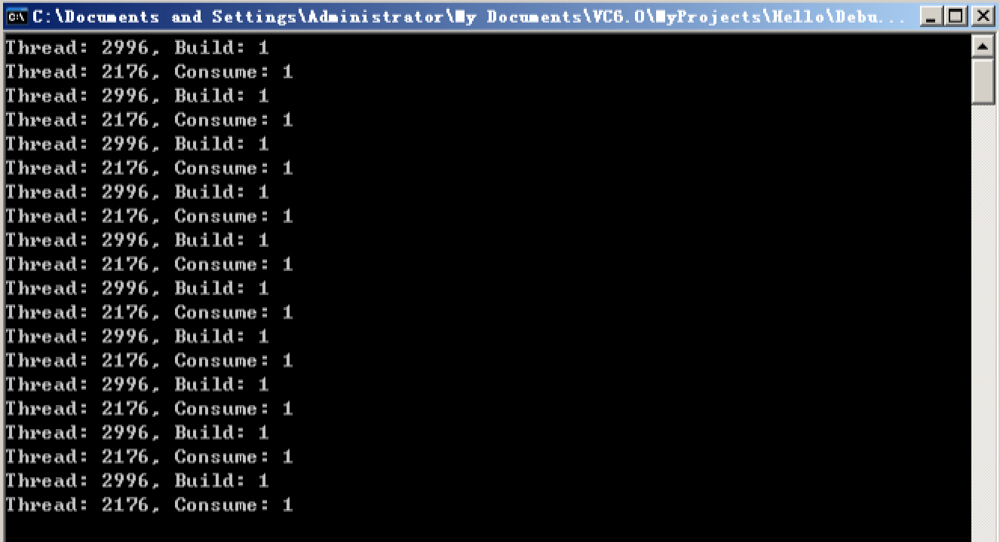
窗口的本质
之前我们学习写的程序都是基于控制台的，而从本章开始学习图形化界面相关的知识。
之前我们所学习的进程、线程之类的函数，其接口来源于kernel32.dll → ntoskrnl.exe；而我们要学习的图形化界面的接口，它就来源于user32.dll、gdi32.dll → win32k.sys。
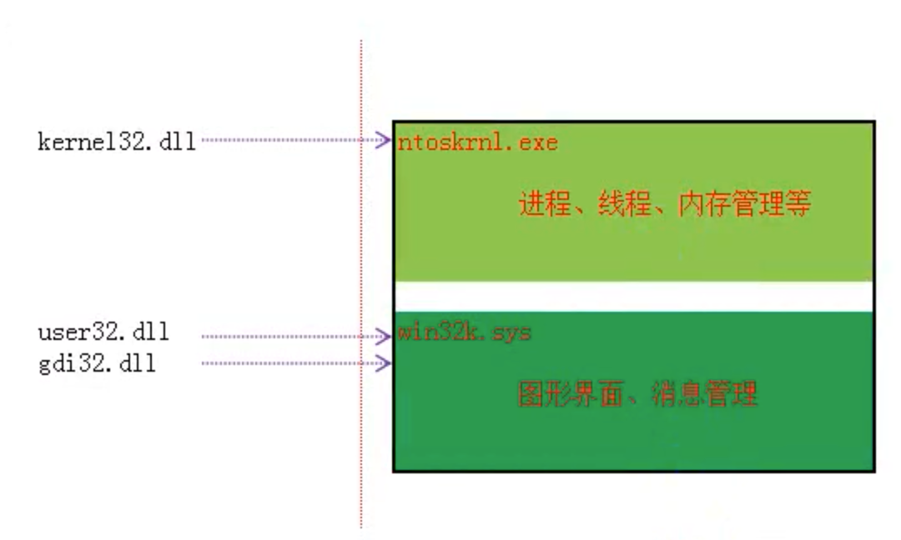
user32.dll和gdi32.dll的区别在哪呢？前者是你想使用Windows已经画好的界面就用它，我们称之为GUI编程；后者是你想自己画一个界面，例如你要画一朵花，那么就使用后者，因为这涉及到绘图相关的内容，我们称之为GDI编程。
之前我们了解过HANDLE句柄，其都是私有的，而在图形界面中有一个新的句柄，其叫HWND，win32k.sys提供在内核层创建图形化界面，我们想要在应用层调用就需要对应的句柄HWND，而这个句柄表是全局的，并且只有一个。

GDI - 图形设备接口
GDI是Graphics Device Interface的缩写，其中文为图形设备接口。
本章主要是学习如何进行GDI编程，但是我们在日常的工作中是不需要用到的，并且没有什么实际意义（需要的都有现成的），我们学习它就是为了来了解窗口的本质、消息机制的本质。
关于GDI有这么几个概念：
设备对象：画的位置
DC（Device Contexts）：设备上下文对象（内存）
图像（图形）对象：决定你要画的东西的属性

进行简单的绘画
如下代码就是在桌面中进行绘画，具体代码意思都在注释中了，不了解的可以在MSDN Library中查询：
#include <windows.h>int main(int argc, char* argv[]){ HWND hWnd; // 窗口句柄 HDC hDc; // 设备上下文对象 HPEN hPen; // 画笔 // 1. 设备对象，要绘画的位置 // 设置为NULL则表示在桌面中绘画 hWnd = (HWND)NULL; // 2. 获取设备的上下文对象（DC） /* 语法格式： HDC GetDC( HWND hWnd // handle to window ); */ hDc = GetDC(hWnd); // 3. 创建画笔，设置线条的属性 /* 语法格式： HPEN CreatePen( int fnPenStyle, // pen style int nWidth, // pen width COLORREF crColor // pen color ); */ hPen = CreatePen(PS_SOLID, 5, RGB(0xFF,00,00)); // RGB表示红绿蓝，红绿蓝的组合就可以组成新的一种颜色。 // 4. 关联 /* 语法格式： HGDIOBJ SelectObject( HDC hdc, // handle to DC HGDIOBJ hgdiobj // handle to object ); */ SelectObject(hDc, hPen); // 5. 开始画线 /* 语法格式： BOOL LineTo( HDC hdc, // device context handle int nXEnd, // x-coordinate of ending point int nYEnd // y-coordinate of ending point ); */ LineTo(hDc, 400, 400); // 6. 释放资源 DeleteObject(hPen); ReleaseDC(hWnd, hDc); return 0;}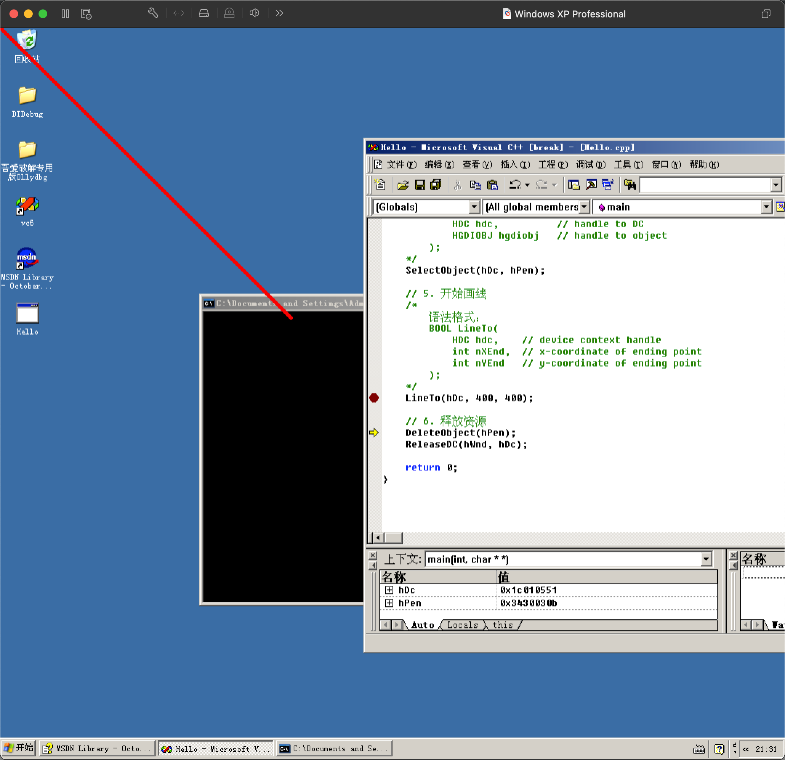
消息队列
什么是消息
当我们点击鼠标的时候，或者当我们按下键盘的时候，操作系统都要把这些动作记录下来，存储到一个结构体中，这个结构体就是消息。
消息队列
每个线程只有一个消息队列。
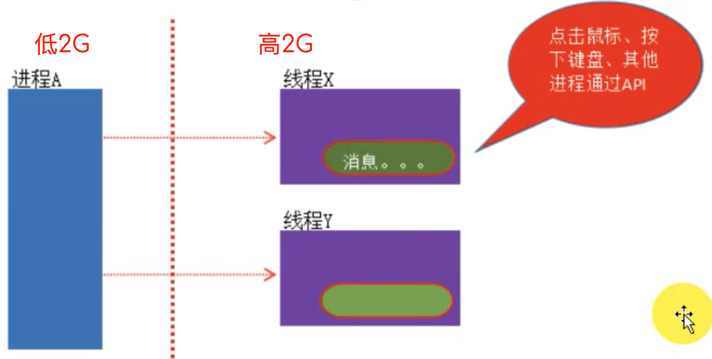
窗口与线程
当我们把鼠标点击左边窗口关闭按钮，为什么它会关闭，这个关闭（坐标、左右键...）操作系统会封装到结构体里（消息），那么这个消息如何精确的传递给对应进程的线程呢？

那是因为操作系统可以将坐标之类的作为索引，去找到对应的窗口，窗口在内核中是有窗口对象的，而这个窗口对象就会包含一个成员，这个成员就是线程对象的指针，线程又包含了消息，所以这样一个顺序就很容易理解了。
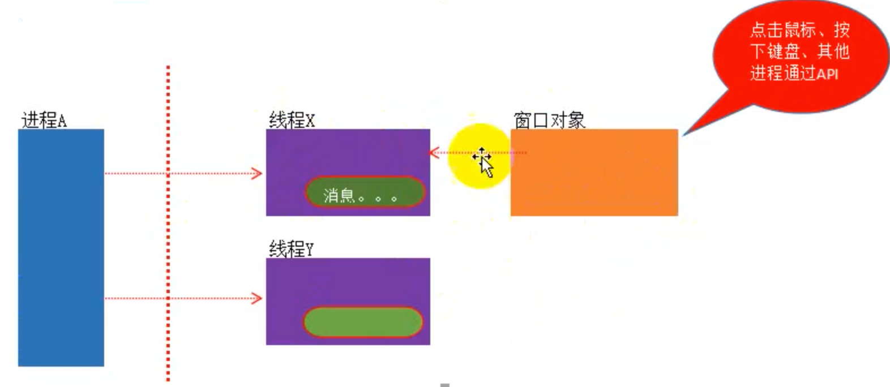
注意：一个线程可以有多个窗口，但是一个窗口只属于一个线程。
第一个Windwos程序
新建Windows窗口程序项目
VC6新建工程，选择Win32 Application，下一步选择一个简单的Win32的程序。
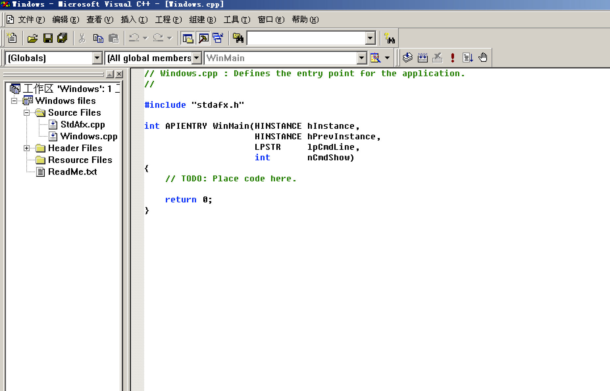
控制台程序是从Main函数为入口开始执行的，而Win32窗口程序是从WinMain函数开始执行的。
新建的项目里的头文件已经把需要用到的Windows.h头文件包含了：
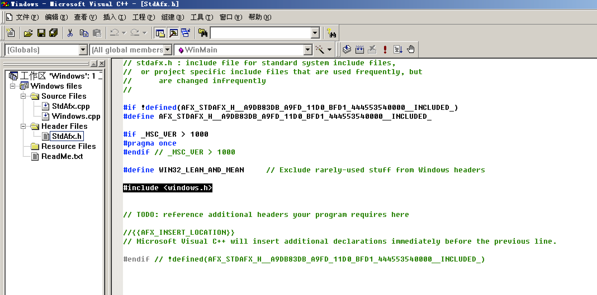
WinMain函数
WinMain函数作为Win32窗口程序的入口函数，我们需要了解一下其函数的参数，语法格式如下：
int WINAPI WinMain( HINSTANCE hInstance, // handle to current instance HINSTANCE hPrevInstance, // handle to previous instance LPSTR lpCmdLine, // command line int nCmdShow // show state);参数解释：
HINSTANCE hInstance，这是一个句柄，在Win32中H开头的通常都是句柄，这里的HINSTANCE是指向模块的句柄，实际上这个值就是模块在进程空间内的内存地址；
HINSTANCE hPrevInstance，该参数永远为空NULL，无需理解；
第三、第四个参数（LPSTR lpCmdLine、int nCmdShow）是由CreateProcess的LPTSTR lpCommandLine、LPSTARTUPINFO lpStartupInfo参数传递的。
调试信息输出
我们在窗口程序中想要输出信息就不可以使用printf了，我们可以使用另外一个函数OutputDebugString，其语法格式如下：
void OutputDebugString( LPCTSTR lpOutputString);传参就是一个LPCTSTR类型（字符串），但是需要注意的是这个函数只能打印固定字符串，不能打印格式化的字符串，所以如果需要格式化输出，需要在这之前使用sprintf函数进行格式化（自行查阅），这里我们可以尝试输出当前模块的句柄：
#include "stdafx.h"int APIENTRY WinMain(HINSTANCE hInstance, HINSTANCE hPrevInstance, LPSTR lpCmdLine, int nCmdShow){ // TODO: Place code here. DWORD dwAddr = (DWORD)hInstance; char szOutBuff[0x80]; sprintf(szOutBuff, "hInstance address: %x \n", dwAddr); // 该函数需要包含stdio.h头文件 OutputDebugString(szOutBuff); return 0;}运行该代码就会在Debug输出框中发现打印的字符串，这就是一个内存地址：
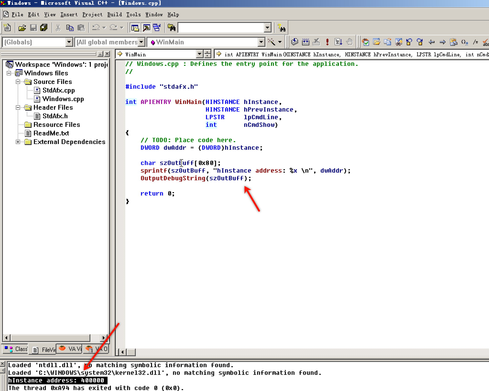
创建窗口程序
如下代码创建了一个简单的窗口程序：
// Windows.cpp : Defines the entry point for the application.//#include "stdafx.h"// 窗口函数定义LRESULT CALLBACK WindowProc(HWND hwnd, UINT uMsg, WPARAM wParam, LPARAM lParam) { // 必须要调用一个默认的消息处理函数，关闭、最小化、最大化都是由默认消息处理函数处理的 return DefWindowProc(hwnd, uMsg, wParam, lParam);}int APIENTRY WinMain(HINSTANCE hInstance, HINSTANCE hPrevInstance, LPSTR lpCmdLine, int nCmdShow){ char szOutBuff[0x80]; // 1. 定义创建的窗口(创建注册窗口类) TCHAR className[] = TEXT("My First Window"); WNDCLASS wndClass = {0}; // 设置窗口背景色 wndClass.hbrBackground = (HBRUSH)COLOR_BACKGROUND; // 设置类名字 wndClass.lpszClassName = className; // 设置模块地址 wndClass.hInstance = hInstance; // 处理消息的窗口函数 wndClass.lpfnWndProc = WindowProc; // 不是调用函数，只是告诉操作系统，当前窗口对应的窗口回调函数是什么 // 注册窗口类 RegisterClass(&wndClass); // 2. 创建并显示窗口 // 创建窗口 /* CreateWindow 语法格式： HWND CreateWindow( LPCTSTR lpClassName, // registered class name 类名字 LPCTSTR lpWindowName, // window name 窗口名字 DWORD dwStyle, // window style 窗口外观的样式 int x, // horizontal position of window 相对于父窗口x坐标 int y, // vertical position of window 相对于父窗口y坐标 int nWidth, // window width 窗口宽度：像素 int nHeight, // window height 窗口长度：像素 HWND hWndParent, // handle to parent or owner window 父窗口句柄 HMENU hMenu, // menu handle or child identifier 菜单句柄 HINSTANCE hInstance, // handle to application instance 模块 LPVOID lpParam // window-creation data 附加数据 ); */ HWND hWnd = CreateWindow(className, TEXT("窗口"), WS_OVERLAPPEDWINDOW, 10, 10, 600, 300, NULL, NULL, hInstance, NULL); if (hWnd == NULL) { // 如果为NULL则窗口创建失败，输出错误信息 sprintf(szOutBuff, "Error: %d", GetLastError()); OutputDebugString(szOutBuff); return 0; } // 显示窗口 /* ShowWindow 语法格式： BOOL ShowWindow( HWND hWnd, // handle to window 窗口句柄 int nCmdShow // show state 显示的形式 ); */ ShowWindow(hWnd, SW_SHOW); // 3. 接收消息并处理 /* GetMessage 语法格式： BOOL GetMessage( LPMSG lpMsg, // message information OUT类型参数，这是一个指针 // 后三个参数都是过滤条件 HWND hWnd, // handle to window 窗口句柄，如果为NULL则表示该线程中的所有消息都要 UINT wMsgFilterMin, // first message 第一条信息 UINT wMsgFilterMax // last message 最后一条信息 ); */ MSG msg; BOOL bRet; while( (bRet = GetMessage( &msg, NULL, 0, 0 )) != 0) { if (bRet == -1) { // handle the error and possibly exit sprintf(szOutBuff, "Error: %d", GetLastError()); OutputDebugString(szOutBuff); return 0; } else { // 转换消息 TranslateMessage(&msg); // 分发消息：就是给系统调用窗口处理函数 DispatchMessage(&msg); } } return 0;}如下图是窗口程序创建执行流程：
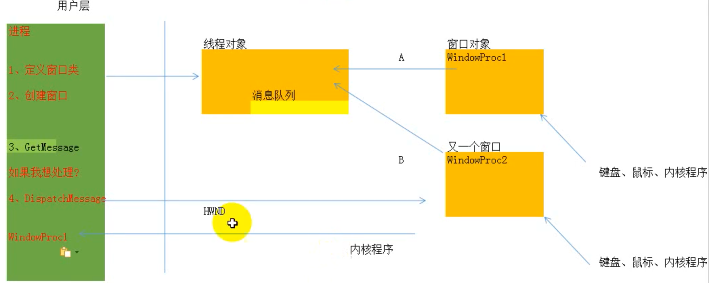
消息类型
消息的产生与处理流程
消息的产生与处理流程，从消息发起这个点开始说，假设我们点击了某个窗口时就会产生一个消息，操作系统得到这个消息后先判断当前点击的是哪个窗口，找到对应的窗口对象，再根据窗口对象的里的某一个成员找到对应线程，一旦找到了对应线程，操作系统就会把封装好的消息（这是一个结构体，包含了你鼠标点击的坐标等等消息）存到对应的消息队列里，应用程序就会通过GetMessage不停的从消息队列中取消息。
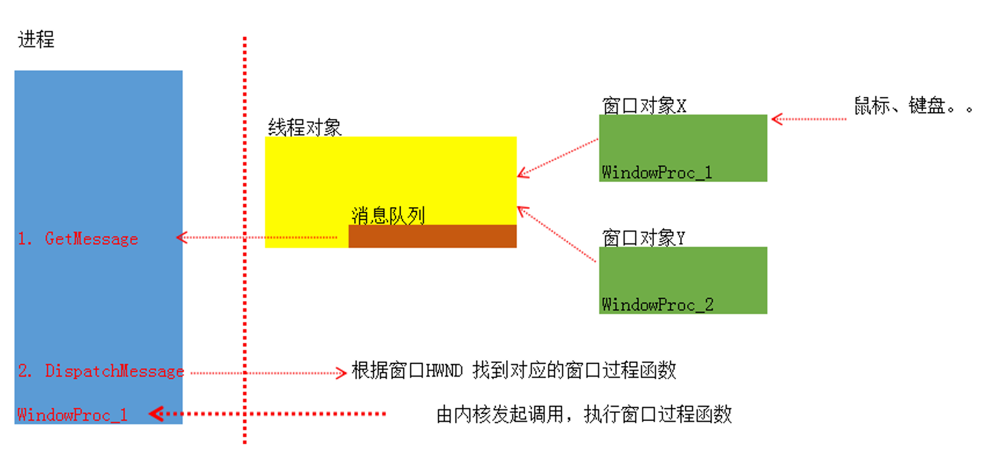
消息结构体
我们是通过GetMessage函数接收消息的，其第一个参数就是接收的消息（结构体），所以可以在之前的代码中选中MSG然后F12跟进看一下消息结构体的定义：

typedef struct tagMSG { HWND hwnd; // 所属窗口句柄 UINT message; // 消息类型：编号 WPARAM wParam; // 附加数据，进一步描述消息的 LPARAM lParam; // 附加数据，进一步描述消息的 DWORD time; // 消息产生的时间 POINT pt; // 在哪里产生的} MSG, *PMSG; 能产生消息的情况有四种情况：1. 键盘 2. 鼠标 3. 其他应用程序 4. 操作系统内核程序，有这么多消息要处理，所以操作系统会将所有消息区分类别，每个消息都有独一无二的编号。
消息这个结构体存储的信息也不多，只能知道消息属于哪个窗口，根本不知道对应窗口函数是什么，所以我们不得不在之后对消息进行分发（DispatchMessage函数），而后由内核发起调用来执行窗口函数。
换而言之，我们这个消息的结构体实际上就是传递给了窗口函数，其四个参数对应着消息结构体的前四个成员。
消息类型
我们想要关注自己想要关注的消息类型，首先可以在窗口函数中打印消息类型来看看都有什么消息类型：
// 窗口函数定义LRESULT CALLBACK WindowProc(HWND hwnd, UINT uMsg, WPARAM wParam, LPARAM lParam) { char szOutBuff[0x80]; sprintf(szOutBuff, "Message: %x - %x \n", hwnd, uMsg); OutputDebugString(szOutBuff); // 必须要调用一个默认的消息处理函数，关闭、最小化、最大化都是由默认消息处理函数处理的 return DefWindowProc(hwnd, uMsg, wParam, lParam);}
可以看见这边输出了一个0x1，想要知道这个对应着什么，我们可以在C:\Program Files\Microsoft Visual Studio\VC98\Include目录中找到WINUSER.H这个文件来查看，搜索0x0001就可以找到：

那么我们可以看见对应的宏就是WM_CREATE，这个消息的意思就是窗口创建，所以我们有很多消息是不需要关注的，而且消息时刻都在产生，非常非常多。
处理窗口关闭
在窗口关闭时，实际上进程并不会关闭，所以我们需要在窗口函数中筛选条件，当窗口关闭了就退出进程。
// 窗口函数定义LRESULT CALLBACK WindowProc(HWND hwnd, UINT uMsg, WPARAM wParam, LPARAM lParam) { switch(uMsg) { // 当窗口关闭则退出进程 case WM_DESTROY: { PostQuitMessage(0); break; } } // 必须要调用一个默认的消息处理函数，关闭、最小化、最大化都是由默认消息处理函数处理的 return DefWindowProc(hwnd, uMsg, wParam, lParam);}处理键盘按下
我们除了可以处理窗口关闭，处理键盘按下也是没问题的，键盘按下的宏是WM_KEYDOWN，但是我们想要按下a这个键之后才处理该怎么办？首先我们需要查阅一下MSDN Library：
LRESULT CALLBACK WindowProc( HWND hwnd, // handle to window UINT uMsg, // WM_KEYDOWN WPARAM wParam, // virtual-key code LPARAM lParam // key data);可以很清楚的看见窗口函数的第三个参数就是虚拟键码（键盘上每个键都对应一个虚拟键码），我们可以输出下按下a，其对应虚拟键码是什么：
// 窗口函数定义LRESULT CALLBACK WindowProc(HWND hwnd, UINT uMsg, WPARAM wParam, LPARAM lParam) { switch(uMsg) { // 当键盘按下则处理 case WM_KEYDOWN: { char szOutBuff[0x80]; sprintf(szOutBuff, "keycode: %x \n", wParam); OutputDebugString(szOutBuff); break; } } // 必须要调用一个默认的消息处理函数，关闭、最小化、最大化都是由默认消息处理函数处理的 return DefWindowProc(hwnd, uMsg, wParam, lParam);}
如上图所示，按下a之后输出的虚拟键码是0x41，所以我们可以根据这个来进行判断。
转换消息
之前我们举例可以处理键盘按下的消息，但是我们想要直观的看到底输入了什么而不是虚拟键码该怎么办？这时候我们就需要使用WM_CHAR这个宏了，但是在这之前，我们的消息是必须要经过转换的，只有其转换了，我们的虚拟键码才能变成具体的字符。
WM_CHAR宏对应的窗口函数参数作用如下：
LRESULT CALLBACK WindowProc( HWND hwnd, // handle to window UINT uMsg, // WM_CHAR WPARAM wParam, // character code (TCHAR) LPARAM lParam // key data);第三个参数就是字符所以我们直接输出这个即可：

子窗口控件
关于子窗口控件
Windows提供了几个预定义的窗口类以方便我们的使用，我们一般叫它们为子窗口控件，简称控件；
控件会自己处理消息，并在自己状态发生改变时通知父窗口；
预定义的控件有：按钮、复选框、编辑框、静态字符串标签和滚动条等。
创建编辑框和按钮
我们想使用子窗口控件可以使用CreateWindow函数来创建，创建位置我们可以选在窗口函数中，当窗口创建则开始创建子窗口控件。
// Windows.cpp : Defines the entry point for the application.//#include "stdafx.h"// 定义子窗口标识#define CWA_EDIT 0x100#define CWA_BUTTON_0 0x101#define CWA_BUTTON_1 0x102// 定义全局模块HINSTANCE gHinstance;// 窗口函数定义LRESULT CALLBACK WindowProc(HWND hwnd, UINT uMsg, WPARAM wParam, LPARAM lParam) { switch (uMsg) { // 当键盘按下则处理 case WM_CHAR: { char szOutBuff[0x80]; sprintf(szOutBuff, "keycode: %c \n", wParam); OutputDebugString(szOutBuff); break; } // 当窗口创建则开始创建子窗口控件 case WM_CREATE: { // 创建编辑框 CreateWindow( TEXT("EDIT"), // registered class name 注册的类名，使用EDIT则为编辑框 TEXT(""), // window name 窗口名称 WS_CHILD | WS_VISIBLE | WS_VSCROLL | ES_MULTILINE, // window style 子窗口控件样式：子窗口、创建后可以看到、滚动条、自动换行 0, // horizontal position of window 在父窗口上的x坐标 0, // vertical position of window 在父窗口上的y坐标 400, // window width 控件宽度 300, // window height 控件高度 hwnd, // menu handle or child identifier 父窗口句柄 (HMENU)CWA_EDIT, // menu handle or child identifier 子窗口标识 gHinstance, // handle to application instance 模块 NULL // window-creation data 附加数据 ); // 创建"设置"按钮 CreateWindow( TEXT("BUTTON"), // registered class name 注册的类名，使用BUTTON则为按钮 TEXT("设置"), // window name 按钮名称 WS_CHILD | WS_VISIBLE, // window style 子窗口控件样式：子窗口、创建后可以看到 450, // horizontal position of window 在父窗口上的x坐标 150, // vertical position of window 在父窗口上的y坐标 80, // window width 控件宽度 20, // window height 控件高度 hwnd, // menu handle or child identifier 父窗口句柄 (HMENU)CWA_BUTTON_0, // menu handle or child identifier 子窗口标识 gHinstance, // handle to application instance 模块 NULL // window-creation data 附加数据 ); // 创建"获取"按钮 CreateWindow( TEXT("BUTTON"), // registered class name 注册的类名，使用BUTTON则为按钮 TEXT("获取"), // window name 按钮名称 WS_CHILD | WS_VISIBLE, // window style 子窗口控件样式：子窗口、创建后可以看到 450, // horizontal position of window 在父窗口上的x坐标 100, // vertical position of window 在父窗口上的y坐标 80, // window width 控件宽度 20, // window height 控件高度 hwnd, // menu handle or child identifier 父窗口句柄 (HMENU)CWA_BUTTON_1, // menu handle or child identifier 子窗口标识 gHinstance, // handle to application instance 模块 NULL // window-creation data 附加数据 ); break; } // 当按钮点击则处理 case WM_COMMAND: { // 宏WM_COMMAND中，wParam参数的低16位中有标识，根据标识我们才能判断哪个按钮和编辑框，使用LOWORD()可以获取低16位 switch (LOWORD(wParam)) { // 当按钮为设置 case CWA_BUTTON_0: { // SetDlgItemText函数修改编辑框内容 SetDlgItemText(hwnd, (int)CWA_EDIT, TEXT("HACK THE WORLD")); break; } // 当按钮为获取 case CWA_BUTTON_1: { // MessageBox弹框输出编辑框内容 TCHAR szEditBuffer[0x80]; GetDlgItemText(hwnd, (int)CWA_EDIT, szEditBuffer, 0x80); MessageBox(NULL, szEditBuffer, NULL, NULL); break; } } break; } } // 必须要调用一个默认的消息处理函数，关闭、最小化、最大化都是由默认消息处理函数处理的 return DefWindowProc(hwnd, uMsg, wParam, lParam);}int APIENTRY WinMain(HINSTANCE hInstance, HINSTANCE hPrevInstance, LPSTR lpCmdLine, int nCmdShow){ char szOutBuff[0x80]; // 1. 定义创建的窗口(创建注册窗口类) TCHAR className[] = TEXT("My First Window"); WNDCLASS wndClass = {0}; // 设置窗口背景色 wndClass.hbrBackground = (HBRUSH)COLOR_BACKGROUND; // 设置类名字 wndClass.lpszClassName = className; // 设置模块地址 gHinstance = hInstance; wndClass.hInstance = hInstance; // 处理消息的窗口函数 wndClass.lpfnWndProc = WindowProc; // 不是调用函数，只是告诉操作系统，当前窗口对应的窗口回调函数是什么 // 注册窗口类 RegisterClass(&wndClass); // 2. 创建并显示窗口 // 创建窗口 /* CreateWindow 语法格式： HWND CreateWindow( LPCTSTR lpClassName, // registered class name 类名字 LPCTSTR lpWindowName, // window name 窗口名字 DWORD dwStyle, // window style 窗口外观的样式 int x, // horizontal position of window 相对于父窗口x坐标 int y, // vertical position of window 相对于父窗口y坐标 int nWidth, // window width 窗口宽度：像素 int nHeight, // window height 窗口长度：像素 HWND hWndParent, // handle to parent or owner window 父窗口句柄 HMENU hMenu, // menu handle or child identifier 菜单句柄 HINSTANCE hInstance, // handle to application instance 模块 LPVOID lpParam // window-creation data 附加数据 ); */ HWND hWnd = CreateWindow(className, TEXT("窗口"), WS_OVERLAPPEDWINDOW, 10, 10, 600, 300, NULL, NULL, hInstance, NULL); if (hWnd == NULL) { // 如果为NULL则窗口创建失败，输出错误信息 sprintf(szOutBuff, "Error: %d", GetLastError()); OutputDebugString(szOutBuff); return 0; } // 显示窗口 /* ShowWindow 语法格式： BOOL ShowWindow( HWND hWnd, // handle to window 窗口句柄 int nCmdShow // show state 显示的形式 ); */ ShowWindow(hWnd, SW_SHOW); // 3. 接收消息并处理 /* GetMessage 语法格式： BOOL GetMessage( LPMSG lpMsg, // message information OUT类型参数，这是一个指针 // 后三个参数都是过滤条件 HWND hWnd, // handle to window 窗口句柄，如果为NULL则表示该线程中的所有消息都要 UINT wMsgFilterMin, // first message 第一条信息 UINT wMsgFilterMax // last message 最后一条信息 ); */ MSG msg; BOOL bRet; while( (bRet = GetMessage( &msg, NULL, 0, 0 )) != 0) { if (bRet == -1) { // handle the error and possibly exit sprintf(szOutBuff, "Error: %d", GetLastError()); OutputDebugString(szOutBuff); return 0; } else { // 转换消息 TranslateMessage(&msg); // 分发消息：就是给系统调用窗口处理函数 DispatchMessage(&msg); } } return 0;}运行结果如下：
Windows预定义的窗口类可以在MSDN Library的CreateWindow函数下面找到：

虚拟内存与物理内存
虚拟内存与物理内存的关系
每个进程都有自己的4GB内存，但是这个4GB内存并不是真实存在的，而是一块虚拟内存。
在进程A的0x12345678内存地址中存入一个值，在进程B的0x12345678内存地址中也存入一个值，两者并不会冲突，而是各自存放各自的。
但是存放的这个值是存放在物理内存上的，所以这里的虚拟内存和物理内存就有一个对应关系，当你真正使用的时候才会给分配物理内存，不使用的时候则就只有虚拟内存（空头支票）。
每一个物理内存的大小是4KB，按照4KB大小来分页（Page），所以如上图所示，就有物理页这个概念。
虚拟内存地址划分
每个进程都有4GB的虚拟内存，虚拟内存的地址是如何划分的？首先，我们需要知道一个虚拟内存分为高2G、低2G。
如下图所示，用户空间是低2G，内核空间是高2G，对我们来说只能使用低2G的用户空间，高2G内核空间是所有进程共用的。
但是需要注意的是低2G的用户空间使用还有前64KB的空指针赋值区和后64KB的用户禁入区是我们目前不能使用的。

术语：线性地址就是虚拟内存的地址
特别说明：线性地址有4G ，但未必都能访问，所以需要记录哪些地方分配了。
物理内存
可使用的物理内存
为了管理方便，物理内存以4KB大小来分页，那么在系统里面这个物理页的数量是多少呢？我使用的虚拟机是可以设置内存大小的（从物理上可以理解为这就是一个内存条）：
比如我现在的是是2GB（2048MB），我们可以在任务管理器清晰的看见物理内存的总数是接近2048*1024的：
那么这一块物理内存能有多少物理页呢？我们可以将总数/4：
也就是有524138个物理页（十进制），转为十六进制就是0x7FF6A
那么物理页面只有这些不够用该怎么办？这时候操作系统会分配硬盘空间来做虚拟内存。我们可以通过系统属性来查看、更改当前分配的虚拟内存大小：

可以看见当前初始大小是2046MB，那么这个是存放在哪的呢？我们可以在C盘下查看（需要显示系统隐藏文件）pagefile.sys这个文件，它刚好是2046MB这个大小，这个文件就是用来做虚拟内存的：
可识别的物理内存
32位操作系统最多可以识别物理内存为64G，但是操作系统会进行限制，例如XP这个系统只能识别4G的物理内存（Windows Server 2003服务器版本可以识别4G以上）。
但是我们可以通过HOOK系统函数来突破XP操作系统的4GB限制。
物理页的使用
我们知道了进程在使用虚拟内存时，就会分配一块物理内存（物理页），但是有那么多程序，很快就会占满物理页，操作系统不会这样设计，而是会去看你的程序是否需要频繁的使用物理页，如果不是很频繁就会将你存储在物理页的内容放在pagefile.sys文件中，然后将这个物理页分配给其他需要的进程；
如果你的程序再次访问物理页的话，就会重新给你分配物理页，然后把数据从pagefile.sys文件中拿出来放到新的物理页中，这都是操作系统在操作的，写程序是感受不到这样的细节的。
私有内存的申请释放
物理内存分为两类，一个是私有内存（Private）一个是共享内存（Mapped），私有内存的意思是这块物理内存（物理页）只有你使用，而共享内存则是多个进程一起用。
申请内存的两种方式
私有内存通过VirtualAlloc/VirtualAllocEx函数申请，这两个函数在底层实现是没有区别的，但是后者是可以在其他进程中申请内存。
共享内存通过CreateFileMapping函数映射
内存申请与释放
申请内存的函数是VirtualAlloc，其语法格式如下：
LPVOID VirtualAlloc( LPVOID lpAddress, // region to reserve or commit 要分配的内存区域的地址，没有特殊需求通常不指定 SIZE_T dwSize, // size of region 分配的大小，一个物理页大小是0x1000（4KB），看你需要申请多少个物理页就乘以多少 DWORD flAllocationType, // type of allocation 分配的类型，常用的是MEM_COMMIT（占用线性地址，也需要物理内存）和MEM_RESERVE（占用线性地址，但不需要物理内存） DWORD flProtect // type of access protection 该内存的初始保护属性);第三、第四参数可以根据MSDN Library查看系统定义的：
如下代码则表示申请2个物理页，占用线性地址并分配物理内存，该内存可读写：
LPVOID pm = VirtualAlloc(NULL, 0x1000*2, MEM_COMMIT, PAGE_READWRITE);那么内存申请好了我们不想要了，这时候就需要释放，释放函数为VirtualFree，其语法格式如下：
BOOL VirtualFree( LPVOID lpAddress, // address of region 内存区域的地址 SIZE_T dwSize, // size of region 内存大小 DWORD dwFreeType // operation type 如何释放，释放的类型，一共有两个类型：MEM_DECOMMIT（释放物理内存，但线性地址保留）、MEM_RELEASE（释放物理内存，释放线性地址，使用这个设置的时候内存大小就必须为0）);所以我们想要释放物理内存，释放线性地址就写如下代码：
VirtualFree(pm, 0, MEM_RELEASE);堆与栈
之前我们学习过的malloc或者new申请内存，它们是申请的什么内存呢？其实通过它们申请的内存是假申请，因为它们是从已经申请好的内存中申请给自己用的，通过它们申请的内存称为堆内存，局部变量称为栈内存。
无论堆内存还是栈内存，都是操作系统启动时操作系统使用VirtualAlloc函数替我们申请好的。
所以堆、栈的本质就是私有内存，也就是通过VirtualAlloc函数申请的。
int main(int argc, char* argv[]){ int x = 0x12345678; // 栈 int* y = (int*)malloc(sizeof(int)*128); // 堆 return 0;}共享内存的申请释放
共享内存
共享内存通过CreateFileMapping函数映射，该函数语法格式如下：
HANDLE CreateFileMapping( // 内核对象，这个对象可以为我们准备物理内存，还可以将文件映射到物理页 HANDLE hFile, // handle to file 文件句柄，如果不想将文件映射到物理页，则不指定该参数 LPSECURITY_ATTRIBUTES lpAttributes, // security 安全属性，包含安全描述符 DWORD flProtect, // protection 保护模式，物理页的属性 DWORD dwMaximumSizeHigh, // high-order DWORD of size 高32位，在32位计算机里通常设置为空 DWORD dwMaximumSizeLow, // low-order DWORD of size 低32位，指定物理内存的大小 LPCTSTR lpName // object name 对象名字，公用时写，自己使用则可以不指定);该函数的作用就是为我们准备好物理内存（物理页），但是创建好了并不代表就可以使用了，我们还需要通过MapViewOffile函数将物理页与线性地址进行映射，MapViewOffile函数语法格式如下：
LPVOID MapViewOfFile( HANDLE hFileMappingObject, // handle to file-mapping object file-mapping对象的句柄 DWORD dwDesiredAccess, // access mode 访问模式(虚拟内存的限制必须比物理地址更加严格) DWORD dwFileOffsetHigh, // high-order DWORD of offset 高32位，在32位计算机里通常设置为空 DWORD dwFileOffsetLow, // low-order DWORD of offset 低32位，指定从哪里开始映射 SIZE_T dwNumberOfBytesToMap // number of bytes to map 共享内存的大小，一般与物理页大小一致);示例代码如下：
#include <windows.h>#define MapFileName "共享内存"#define BUF_SIZE 0x1000HANDLE g_hMapFile;LPTSTR g_lpBuff;int main(int argc, char* argv[]){ // 内核对象：准备好物理页，无效句柄值-1、物理页可读写、申请一个物理页 g_hMapFile = CreateFileMapping(INVALID_HANDLE_VALUE, NULL, PAGE_READWRITE, 0, BUF_SIZE, MapFileName); // 将物理页与线性地址进行映射 g_lpBuff = (LPTSTR)MapViewOfFile(g_hMapFile, FILE_MAP_ALL_ACCESS, 0, 0, BUF_SIZE); // 向物理内存中存储 *(PDWORD)g_lpBuff = 0x12345678; // 关闭映射，关闭映射则表示释放了线形地址，但是物理页还存在 UnmapViewOfFile(g_lpBuff); // 关闭句柄，这样才能释放物理页，但需要等待物理页使用完毕才会真正的释放，这里只是告诉系统我们当前进程不使用该句柄（物理页）罢了 CloseHandle(g_hMapFile); return 0;}
文件系统
文件系统是操作系统用于管理磁盘上文件的方法和数据结构；简单点说就是在磁盘上如何组织文件的方法。
在Windows下有NTFS、FAT32这两种文件系统，我们可以通过查看本地磁盘的属性查看：

卷相关API
卷可以理解为就是我们的本地磁盘（逻辑驱动器），我们可以把一块2GB的内存条分为两个卷，卷里头的就是文件和目录。
获取卷（逻辑驱动器）
函数GetLogicalDrives用于获取当前计算机所有逻辑驱动器，语法格式为：
DWORD GetLogicalDrives(VOID); // 返回值是一个DOWRD，没有参数如下图所示代码，我们最终获取到的就是一个十六进制的d，在MSDN Library中明确说明了这个返回值表示的结果：
二进制位标志着存在哪些驱动器，位0为1则表示存在驱动器A，位1为1则表示存在驱动器B，以此类推，这里我们获取的0xd二进制是1101，位1为1、位2为0、位3为1、位4为1，那么就表示我们存在驱动器A、C、D。
// 获取卷（逻辑驱动器）DWORD gLd = GetLogicalDrives();printf("GetLogicalDrives: %x", gLd);
获取所有逻辑驱动器的字符串
函数GetLogicalDriveStrings用于获取所有逻辑驱动器的字符串，语法格式为：
DWORD GetLogicalDriveStrings( DWORD nBufferLength, // size of buffer 输入类型，要获取字符串的大小 LPTSTR lpBuffer // drive strings buffer 输出类型，将获取的字符串放到该参数中);如下图所示我可以获取所有逻辑驱动器的字符串，那么很清晰的可以看见逻辑驱动器的字符串就是盘符加上冒号和反斜杠：
// 获取一个逻辑驱动器的字符串DWORD nBufferLength = 100;char szOutBuffer[100];GetLogicalDriveStrings(nBufferLength, szOutBuffer);
获取卷（逻辑驱动器）的类型
函数GetLogicalDriveStrings用于获取卷的类型，语法格式为：
UINT GetDriveType( LPCTSTR lpRootPathName // root directory 根目录，这里我们可以使用驱动器字符串);如下图所示，我获取了逻辑驱动器C的类型：
// 获取卷的类型UINT type;type = GetDriveType(TEXT("C:\\"));if (type == DRIVE_UNKNOWN) { printf("无法确定驱动器的类型 \n");} else if (type == DRIVE_NO_ROOT_DIR) { printf("根路径是无效的，例如: 在该路径上没有安装任何卷 \n");} else if (type == DRIVE_REMOVABLE) { printf("磁盘可以从驱动器中取出 \n");} else if (type == DRIVE_FIXED) { printf("磁盘不能从驱动器中取出 \n");} else if (type == DRIVE_REMOTE) { printf("该驱动器是一个远程（网络）驱动器 \n");} else if (type == DRIVE_CDROM) { printf("该驱动器是一个CD-ROM驱动器 \n");} else if (type == DRIVE_RAMDISK) { printf("该驱动器是一个RAM磁盘 \n");}
获取卷的信息
函数GetVolumeInformation用于获取卷的信息，语法格式为：
BOOL GetVolumeInformation( LPCTSTR lpRootPathName, // root directory 输入类型，驱动器字符串 LPTSTR lpVolumeNameBuffer, // volume name buffer 输出类型，返回卷名 DWORD nVolumeNameSize, // length of name buffer 输入类型，卷名长度 LPDWORD lpVolumeSerialNumber, // volume serial number 输出类型，卷宗序列号 LPDWORD lpMaximumComponentLength, // maximum file name length 输出类型，指定文件系统支持的文件名组件的最大长度 LPDWORD lpFileSystemFlags, // file system options 输出类型，与指定文件系统相关的标志 LPTSTR lpFileSystemNameBuffer, // file system name buffer 输出类型，文件系统（如FAT或NTFS）名称 DWORD nFileSystemNameSize // length of file system name buffer 输入类型，文件系统名称的长度);如下图所示，我获取了逻辑驱动器C的相关信息：
// 获取卷的信息TCHAR szVolumeName[260];DWORD dwVolumeSerialNumber;DWORD dwMaximumComponentLength;DWORD dwFileSystemFlags;TCHAR szFileSystemNameBuffer[260];GetVolumeInformation("C:\\", szVolumeName, 260, &dwVolumeSerialNumber, &dwMaximumComponentLength, &dwFileSystemFlags, szFileSystemNameBuffer, 260);
目录相关API
创建目录
函数CreateDirectory用于创建目录，其语法格式如下：
BOOL CreateDirectory( LPCTSTR lpPathName, // directory name 目录名称，需要指定完整路径包含盘符的 LPSECURITY_ATTRIBUTES lpSecurityAttributes // SD 安全属性，包含安全描述符);在C盘下创建test目录：
// 创建目录，如果不指定绝对路径，则默认会在程序当前目录下CreateDirectory(TEXT("C:\\test"), NULL);
删除目录
函数RemoveDirectory用于删除目录，其语法格式如下：
BOOL RemoveDirectory( LPCTSTR lpPathName // directory name 目录名称，需要指定完整路径包含盘符的);删除C盘下的test目录：
// 删除目录RemoveDirectory(TEXT("C:\\test"));修改目录名称（移动）
函数MoveFile用于修改目录名称（移动），其语法格式如下：
BOOL MoveFile( LPCTSTR lpExistingFileName, // file name 目录名 LPCTSTR lpNewFileName // new file name 新目录名);将C盘下的test文件夹重命名为test1，也可以理解为以新的名称移动到新的目录下：
// 修改目录名称（移动）MoveFile(TEXT("C:\\test"), TEXT("C:\\test1"));
获取程序当前目录
函数GetCurrentDirectory用于获取程序当前目录，其语法格式如下：
DWORD GetCurrentDirectory( DWORD nBufferLength, // size of directory buffer 输入类型，获取当前目录名的大小 LPTSTR lpBuffer // directory buffer 输出类型，当前目录名称);示例代码：
// 获取程序当前目录TCHAR dwOutDirectory[200];GetCurrentDirectory(200, dwOutDirectory);
设置程序当前目录
函数SetCurrentDirectory用于设置程序当前目录，其语法格式如下：
BOOL SetCurrentDirectory( LPCTSTR lpPathName // new directory name 新的目录名称);示例代码：
// 设置程序当前目录SetCurrentDirectory(TEXT("C:\\test"));文件相关API
创建文件
函数CreateFile用于创建文件，其语法格式如下：
HANDLE CreateFile( LPCTSTR lpFileName, // file name 文件名 DWORD dwDesiredAccess, // access mode 访问模式 DWORD dwShareMode, // share mode 共享模式，如果为0则是排他性，就是目前在使用时其他人是无法使用的 LPSECURITY_ATTRIBUTES lpSecurityAttributes, // SD 安全属性，包含安全描述符 DWORD dwCreationDisposition, // how to create 如何创建，可以打开一个已经存在的文件 DWORD dwFlagsAndAttributes, // file attributes 文件属性，可以创建隐藏文件 HANDLE hTemplateFile // handle to template file );以可读可写方式不管有没有，有就覆盖没有就新建的方式创建一个隐藏文件：
// 创建文件CreateFile(TEXT("C:\\A.txt"), GENERIC_READ|GENERIC_WRITE, 0, NULL, CREATE_ALWAYS, FILE_ATTRIBUTE_HIDDEN, NULL);
关闭文件
函数CloseHandle用于关闭文件，其语法格式如下：
BOOL CloseHandle( HANDLE hObject // handle to object 文件句柄);
获取文件大小
函数GetFileSize用于获取文件大小，其语法格式如下：
DWORD GetFileSize( HANDLE hFile, // handle to file 输入类型，文件句柄 LPDWORD lpFileSizeHigh // high-order word of file size，输出类型，高32位的文件大小，这个没有用，长度一般在低32位中，也就是当前函数的返回值);示例代码如下：
// 创建文件HANDLE hFile = CreateFile(TEXT("C:\\A.txt"), GENERIC_READ, 0, NULL, OPEN_EXISTING, FILE_ATTRIBUTE_NORMAL, NULL);// 获取文件大小，单位是字节DWORD lpFileSizeHigh;DWORD dwLow = GetFileSize(hFile, &lpFileSizeHigh);// 关闭文件CloseHandle(hFile);
获取文件的属性和信息
函数GetFileAttributes、GetFileAttributesEx用于获取文件的属性和信息，其语法格式如下：
DWORD GetFileAttributes( // 这个仅能获取属性 LPCTSTR lpFileName // name of file or directory 文件或目录的名称);BOOL GetFileAttributesEx( // 这个可以获取属性、信息 LPCTSTR lpFileName, // file or directory name 输入类型，文件或目录的名称 GET_FILEEX_INFO_LEVELS fInfoLevelId, // attribute class 输入类型，这个只有GetFileExInfoStandard一个值 LPVOID lpFileInformation // attribute information 输出类型，文件属性和信息的结果);示例代码如下：
WIN32_FILE_ATTRIBUTE_DATA data; // 定义一个结构体GetFileAttributesEx(TEXT("C:\\A.txt"), GetFileExInfoStandard, &data); // 传递结构体指针
读/写/拷贝/删除文件
函数ReadFile、WriteFile、CopyFile、DeleteFile用于读/写/拷贝/删除文件，其语法格式如下：
BOOL ReadFile( // 读取文件 HANDLE hFile, // handle to file 文件句柄 LPVOID lpBuffer, // data buffer 输出类型，数据放哪 DWORD nNumberOfBytesToRead, // number of bytes to read 要读多少字节 LPDWORD lpNumberOfBytesRead, // number of bytes read 真正读多少字节 LPOVERLAPPED lpOverlapped // overlapped buffer);BOOL WriteFile( // 写入文件 HANDLE hFile, // handle to file 文件句柄 LPCVOID lpBuffer, // data buffer 要写入的数据在哪 DWORD nNumberOfBytesToWrite, // number of bytes to write 要写多少字节 LPDWORD lpNumberOfBytesWritten, // number of bytes written 真正写多少字节 LPOVERLAPPED lpOverlapped // overlapped buffer);BOOL CopyFile( // 拷贝文件 LPCTSTR lpExistingFileName, // name of an existing file 已经存在的文件 LPCTSTR lpNewFileName, // name of new file 复制的文件 BOOL bFailIfExists // operation if file exists FALSE则复制位置的文件已经存在就覆盖，TRUE反之);BOOL DeleteFile( // 删除文件 LPCTSTR lpFileName // file name 文件名);示例代码如下（举一反三）：
#include <windows.h>#include <stdlib.h>int main(int argc, char* argv[]){ HANDLE hFile = CreateFile(TEXT("C:\\A.txt"), GENERIC_READ, 0, NULL, OPEN_EXISTING, FILE_ATTRIBUTE_NORMAL, NULL); // 读取文件 // 1. 分配空间 DWORD lpFileSizeHigh; DWORD fileSize = GetFileSize(hFile, &lpFileSizeHigh); LPSTR pszBuffer = (LPSTR)malloc(fileSize); ZeroMemory(pszBuffer, fileSize); // 2. 设置当前读取的位置 // 文件句柄、第几个开始读、高32位、从文件最开始的位置 SetFilePointer(hFile, 0, NULL, FILE_BEGIN); // 3. 读取数据 DWORD dwReadLength; ReadFile(hFile, pszBuffer, fileSize, &dwReadLength, NULL); // 4. 释放内存 free(pszBuffer); // 5. 关闭文件 CloseHandle(hFile); return 0;}
查找文件
函数FindFirstFile、FindNextFile用于查找文件，其语法格式如下：
HANDLE FindFirstFile( LPCTSTR lpFileName, // file name 输入类型，文件名 LPWIN32_FIND_DATA lpFindFileData // data buffer 输出类型，WIN32_FIND_DATA结构体指针，找到的文件数据);BOOL FindNextFile( HANDLE hFindFile, // search handle 输入类型，搜索句柄 LPWIN32_FIND_DATA lpFindFileData // data buffer 输出类型，WIN32_FIND_DATA结构体指针，存放找到的文件数据);示例代码如下：
WIN32_FIND_DATA firstFile;WIN32_FIND_DATA nextFile;// 在C盘下搜索.txt后缀的文件HANDLE hFile = FindFirstFile(TEXT("C:\\*.txt"), &firstFile);printf("第一个文件名: %s 文件大小: %d\n", firstFile.cFileName, firstFile.nFileSizeLow);if (hFile != INVALID_HANDLE_VALUE) { // 有搜索到，就使用FindNextFile寻找下一个文件，FindNextFile函数返回为真则表示搜索到了 while (FindNextFile(hFile, &nextFile)) { printf("文件名: %s 文件大小: %d\n", nextFile.cFileName, nextFile.nFileSizeLow); }}
内存映射文件
什么是内存映射文件
内存映射文件就如下图，将硬盘某个文件映射到物理页上，然后再将物理页映射到虚拟内存中。
优点：
访问文件就像访问内存一样简单，想读就读，想怎么样就怎么样，不用那么繁杂；
当文件过大时，使用内存映射文件的方式，性能相对于普通I/O的访问要好很多。
内存映射文件读写
之前我们学习过用CreateFileMapping函数来创建共享内存，这个函数同样也可以将文件映射到物理页，只不过在这之前我们需要传递一个文件句柄。
如下代码我们写了一个读取文件最开始第一个字节的值：
DWORD MappingFile(LPSTR lpcFile) { HANDLE hFile; HANDLE hMapFile; LPVOID lpAddr; // 1. 创建文件（获取文件句柄） hFile = CreateFile(lpcFile, GENERIC_READ|GENERIC_WRITE, 0, NULL, OPEN_EXISTING, FILE_ATTRIBUTE_NORMAL, NULL); // 判断CreateFile是否执行成功 if(hFile == NULL) { printf("CreateFile failed: %d \n", GetLastError()); return 0; } // 2. 创建FileMapping对象 hMapFile = CreateFileMapping(hFile, NULL, PAGE_READWRITE, 0, 0, NULL); // 判断CreateFileMapping是否执行成功 if(hMapFile == NULL) { printf("CreateFileMapping failed: %d \n", GetLastError()); return 0; } // 3. 物理页映射到虚拟内存 lpAddr = MapViewOfFile(hMapFile, FILE_MAP_COPY, 0, 0, 0); // 4. 读取文件 DWORD dwTest1 = *(LPDWORD)lpAddr; // 读取最开始的4字节 printf("dwTest1: %x \n", dwTest1); // 5. 写文件 // *(LPDWORD)lpAddr = 0x12345678; // 6. 关闭资源 UnmapViewOfFile(lpAddr); CloseHandle(hFile); CloseHandle(hMapFile); return 0;}调用函数运行之后成功输出，并获取到对应内容：
MappingFile(TEXT("C:\\A.txt"));
小技巧 → 在VC6中想要以HEX的形式查看某个文件的话可以在打开文件的时候这样设置：
举一反三，写文件也很简单，但是需要注意的是写文件不是立即生效的，而是先将写入的存放到缓存中，只有等到你释放资源了才会把缓存里的值真正的写入到文件。
如果你希望修改可以立即生效，我们可以通过FlushViewOfFile函数来强制更新缓存，其语法格式如下：
BOOL FlushViewOfFile( LPCVOID lpBaseAddress, // starting address 你要刷新的地址 SIZE_T dwNumberOfBytesToFlush // number of bytes in range 要刷新的大小（字节）);示例代码：
FlushViewOfFile(((LPDWORD)lpAddr), 4);内存映射文件之共享
内存映射文件可以让2个进程同时共享一个文件：

其实本质很简单，我们只需要在创建FileMapping对象时候给其一个对象名称即可。
现在我们来A进程写入，B进程读取看看到底能不能跨进程恭喜，写入代码：
#define MAPPINGNAME "Share File"DWORD MappingFile(LPSTR lpcFile) { HANDLE hFile; HANDLE hMapFile; LPVOID lpAddr; // 1. 创建文件（获取文件句柄） hFile = CreateFile(lpcFile, GENERIC_READ|GENERIC_WRITE, 0, NULL, OPEN_EXISTING, FILE_ATTRIBUTE_NORMAL, NULL); // 判断CreateFile是否执行成功 if(hFile == NULL) { printf("CreateFile failed: %d \n", GetLastError()); return 0; } // 2. 创建FileMapping对象 hMapFile = CreateFileMapping(hFile, NULL, PAGE_READWRITE, 0, 0, MAPPINGNAME); // 判断CreateFileMapping是否执行成功 if(hMapFile == NULL) { printf("CreateFileMapping failed: %d \n", GetLastError()); return 0; } // 3. 物理页映射到虚拟内存 lpAddr = MapViewOfFile(hMapFile, FILE_MAP_ALL_ACCESS, 0, 0, 0); // 4. 读取文件 // DWORD dwTest1 = *(LPDWORD)lpAddr; // 读取最开始的4字节 // printf("dwTest1: %x \n", dwTest1); // 5. 写文件 *(LPDWORD)lpAddr = 0x41414142; FlushViewOfFile(((LPDWORD)lpAddr), 4); printf("Process A Write"); getchar(); // 6. 关闭资源 UnmapViewOfFile(lpAddr); CloseHandle(hFile); CloseHandle(hMapFile); return 0;}读取代码：
#define MAPPINGNAME "Share File"DWORD MappingFile(LPSTR lpcFile) { HANDLE hMapFile; LPVOID lpAddr; // 1. 打开FileMapping对象 /* OpenFileMapping 函数语法格式： HANDLE OpenFileMapping( DWORD dwDesiredAccess, // access mode 访问模式 BOOL bInheritHandle, // inherit flag 继承标识，为真则表示这个可以被新进程继承，为假反之 LPCTSTR lpName // object name 对象名称 ); */ hMapFile = OpenFileMapping(FILE_MAP_ALL_ACCESS, FALSE, MAPPINGNAME); // 2. 物理页映射到虚拟内存 lpAddr = MapViewOfFile(hMapFile, FILE_MAP_ALL_ACCESS, 0, 0, 0); // 3. 读取文件 DWORD dwTest1 = *(LPDWORD)lpAddr; // 读取最开始的4字节 printf("dwTest1: %x \n", dwTest1); // 4. 写文件 // *(LPDWORD)lpAddr = 0x41414142; printf("Process B Read"); getchar(); // 5. 关闭资源 UnmapViewOfFile(lpAddr); CloseHandle(hMapFile); return 0;}分别使用getchar函数挂住了运行，A进程写入0x41414142，B进程也成功读取到了这个值：
内存映射文件之写拷贝
我们知道了内存映射文件可以共享，但是这样也有弊端，如下图所示，实际上我们程序调用的user32.dll这类dll文件，也是通过这种方式进行调用的，如果我们进场A修改了某个DLL，就会导致进程B出问题。
为了解决这种隐患，我们可以使用写拷贝的方式来处理。
写拷贝的实现就是MapViewOfFile函数中的第二个参数值为FILE_MAP_COPY，它的意思表示当你在写的时候进行拷贝。
当我们设置为该熟悉时，则多进程之间读取的是同一块物理页，但是当进程A写入的时候则会将这份物理页拷贝为一个新的物理页进行写：
写拷贝属性时候，写入时并不会影响原本的文件内容。
静态链接库
软件随着更迭会越来越复杂，包含的功能会很多，一个大型软件参与开发的人会非常多，因为不可能一个把所有事情干了，这样就会把软件分为多个模块，每个模块有对应的人去写，静态链接库就是软件模块化的一种解决方案。
编写静态链接库文件
在VC6中创建静态链接库项目：

创建项目A，然后新建A.cpp和A.h，在A.h中声明一个add方法，在A.cpp中实现该方法：
编译一下，在项目目录的Debug目录下会有一个A.lib文件，这就是我们的静态链接库：
如果我们需要给别人用的话那就需要A.lib + A.h这个头文件一起给别人。
静态链接库的使用
静态链接库的使用有两种方法：
项目根目录
第一种方法：将生成的.h与.lib文件复制到项目根目录，然后在代码中引用：
#include "xxxx.h"#pragma comment(lib, "xxxx.lib")
VC6安装目录
第二种方法：将xxxx.h与xxxx.lib文件复制到VC6安装目录，与库文件放在一起，然后在工程->设置->连接->对象/库模块中添加xxxx.lib，最后就可以像使用C语言库一样使用它了
头文件路径：C:\Program Files\Microsoft Visual Studio\VC98\Include
静态链接库路径：C:\Program Files\Microsoft Visual Studio\VC98\Lib
在编辑框中写入A.lib，多个lib文件以空格隔开：

静态链接库的缺点
第一个：使用静态链接生成的可执行文件体积较大，例如我们从汇编层面来看，是根本无法区分哪个是静态库中的代码的：

同时我们也了解了静态链接库的本质，那就是把你想要调用的接口（函数）直接写入到你的程序中。
第二个：包含相同的公共代码，造成浪费，假设我们在多个项目中使用同一个静态链接库，其实也就表示相同的代码复制多份。
动态链接库
动态链接库弥补了静态链接库的两个缺点，动态链接库（Dynamic Link Library，缩写为DLL），是微软公司在微软Windows操作系统中对共享函数库概念的一种实现方式，这些库函数的文件扩展名称为：.dll、.ocx（包含ActiveX控制的库）。
创建动态链接库
extern的方式
VC6创建项目：

与静态链接库的创建方式一样，我们创建一个新的类MyDLL，这样就会自动创建MyDLL.h和MyDLL.cpp：

在头文件MyDLL.h中我们要声明接口（函数），需要使用固定格式来声明而不能像静态链接库那样直接使用，格式如下：
extern "C" _declspec(dllexport) 调用约定 返回类型 函数名 (参数列表);
在MyDLL.cpp中实现方法，需要在开头写上一致的调用约定：

编译后在Debug目录就会生成B.dll文件：

在这里我们可以使用LordPE来查看我们这个DLL文件的导出表（涉及中级班课程暂时可以略过），我们只要知道在这个导出表中有这个DLL声明的函数：
可以很清楚的看见我们的函数名称变成了_add@8。
使用.DEF文件
我们可以在项目中创建一个文件扩展名为.def的文件，在该文件中使用如下格式来声明：
EXPORTS 函数名 @编号 // 有编号，也有名称函数名 @编号 NONAME // 有编号，没有名称按照这种方式修改如下：
头文件：

CPP文件：
DEF文件：
然后编译，用LordPE打开查看一下函数名称就会发现其没有了@xxx这样的格式而是我们定义什么样就是什么样：

这样做的好处就是：可以很直观的看见函数名，并且在应用层面可以达到隐藏的目的。
使用动态链接库
使用动态链接库的步骤比较繁琐，一共有如下几个步骤：
// 将DLL文件复制到项目目录下// 步骤1：定义函数指针,如：typedef int (*lpAdd)(int,int);// 步骤2：声明函数指针变量,如：lpAdd myAdd;// 步骤3：动态加载dll到内存中,如：// LoadLibrary函数会先从当前目录寻找，然后在系统目录寻找HINSTANCE hModule = LoadLibrary("B.dll"); // 步骤4：获取函数地址,如：myAdd = (lpAdd)GetProcAddress(hModule, "add");// 步骤5：调用函数,如：int a = myAdd(10,2);// 步骤6：释放动态链接库,如：FreeLibrary(hModule);执行结果如下图：
隐式链接
之前我们调用动态链接库（DLL文件）使用的方式实际上是显式链接，它的优点是非常灵活，缺点就是使用起来非常麻烦，步骤很繁琐。
本章节我们来学习隐式链接，通过隐式链接我们只需要一次配置，之后就会非常的方便。
隐式链接
隐式链接有这几个步骤：
将.dll和.lib放到项目目录下
将 #pragma comment(lib, "DLL名.lib") 添加到调用文件
加入函数声明
函数声明格式如下：
注意：在课程中给出的_declspec是有两个下划线的，经过查询之后实际上一个下划线和两个下划线是等价的。
_declspec(dllimport) _调用约定 返回值 函数名称 (函数参数列表);
注意，如果你创建动态链接库的方式是extern的方式，那么在第三步加入函数声明时就应该按照extern的格式来：
extern "C" _declspec(dllexport) 调用约定 返回类型 函数名 (参数列表);extern "C" _declspec(dllimport) 调用约定 返回类型 函数名 (参数列表);隐式链接的实现
使用隐式链接，编译器会将链接的DLL文件存放到导入表中：
我们可以使用LordPE来查看一下：

并且它可以详细的记录使用了DLL中的哪些函数：
DLL的优点
DLL的优点如下图所示，DLL只在内存中加载一份，修改的时候就是写拷贝原理，不会影响别的进程使用DLL以及不会影响DLL本身：
DllMain函数
我们的控制台程序入口是Main函数，而DLL文件的入口函数是DllMain函数（DllMain函数可能会执行很多次，不像我们的Main函数只执行一次），其语法格式如下：
BOOL WINAPI DllMain( HINSTANCE hinstDLL, // handle to the DLL module DLL模块的句柄，当前DLL被加载到什么位置 DWORD fdwReason, // reason for calling function DLL被调用的原因，有4种情况：DLL_PROCESS_ATTACH（当某个进程第一次执行LoadLibrary）、DLL_PROCESS_DETACH（当某个进程释放了DLL）、DLL_THREAD_ATTACH（当某个进程的其他线程再次执行LoadLibrary）、DLL_THREAD_DETACH（当某个进程的其他线程释放了DLL） LPVOID lpvReserved // reserved);远程线程
线程的概念
线程是附属在进程上的执行实体，是代码的执行流程；代码必须通过线程才能执行。
创建远程线程
创建远程线程的函数是CreateRemoteThread，其语法格式如下：
HANDLE CreateRemoteThread( HANDLE hProcess, // handle to process 输入类型，进程句柄 LPSECURITY_ATTRIBUTES lpThreadAttributes, // SD 输入类型，安全属性，包含安全描述符 SIZE_T dwStackSize, // initial stack size 输入类型，堆大小 LPTHREAD_START_ROUTINE lpStartAddress, // thread function 输入类型，线程函数，线程函数地址应该是在别的进程中存在的 LPVOID lpParameter, // thread argument 输入类型，线程参数 DWORD dwCreationFlags, // creation option 输入类型，创建设置 LPDWORD lpThreadId // thread identifier 输出类型，线程id);CreateThread函数是在当前进程中创建线程，而CreateRemoteThread函数是允许在其他进程中创建线程，所以远程线程就可以理解为是非本进程中的线程。
首先创建A进程，代码如下：
void Fun() { for(int i = 0; i <= 5; i++) { printf("Fun running... \n"); Sleep(1000); }}DWORD WINAPI ThreadProc(LPVOID lpParameter) { Fun(); return 0;}int main(int argc, char* argv[]) { HANDLE hThread = CreateThread(NULL, NULL, ThreadProc, NULL, 0, NULL); CloseHandle(hThread); getchar(); return 0;}进程B写了一个远程线程创建的代码：
BOOL MyCreateRemoteThread(DWORD dwProcessId, DWORD dwProcessAddr) { DWORD dwThreadId; HANDLE hProcess; HANDLE hThread; // 1. 获取进程句柄 hProcess = OpenProcess(PROCESS_ALL_ACCESS, FALSE, dwProcessId); // 判断OpenProcess是否执行成功 if(hProcess == NULL) { OutputDebugString("OpenProcess failed! \n"); return FALSE; } // 2. 创建远程线程 hThread = CreateRemoteThread( hProcess, // handle to process NULL, // SD 0, // initial stack size (LPTHREAD_START_ROUTINE)dwProcessAddr, // thread function NULL, // thread argument 0, // creation option &dwThreadId // thread identifier ); // 判断CreateRemoteThread是否执行成功 if(hThread == NULL) { OutputDebugString("CreateRemoteThread failed! \n"); CloseHandle(hProcess); return FALSE; } // 3. 关闭 CloseHandle(hThread); CloseHandle(hProcess); // 返回 return TRUE;}函数MyCreateRemoteThread传入2个参数，一个是进程ID，一个是线程函数地址。
进程ID通过任务管理器查看：
我们在进程A的代码下断点找到线程函数地址：
然后将对应值填入即可远程创建线程：

远程线程注入
之前我们是远程创建线程，调用的也是人家自己的线程函数，而如果我们想要创建远程线程调用自己定义的线程函数就需要使用远程线程注入技术。
什么是注入
所谓注入就是在第三方进程不知道或者不允许的情况下将模块或者代码写入对方进程空间，并设法执行的技术。
在安全领域，“注入”是非常重要的一种技术手段，注入与反注入也一直处于不断变化的，而且也愈来愈激烈的对抗当中。
已知的注入方式：
远程线程注入、APC注入、消息钩子注入、注册表注入、导入表注入、输入法注入等等。
远程线程注入的流程
远程线程注入的思路就是在进程A中创建线程，将线程函数指向LoadLibrary函数。
那么为什么可以这样呢？这是因为我们执行远程线程函数满足返回值是4字节，一个参数是4字节即可（ThreadProc就是这样的条件）：
我们再来看一下LoadLibrary函数的语法格式：
HMODULE LoadLibrary( LPCTSTR lpFileName // file name of module);我们可以跟进（F12）一下HMODULE和LPCTSTR这两个宏的定义，就会发现其实都是4字节宽度。
具体实现步骤如下图所示：

如何执行代码
DLL文件，在DLL文件入口函数判断并创建线程：
// B.cpp : Defines the entry point for the DLL application.//#include "stdafx.h"DWORD WINAPI ThreadProc(LPVOID lpParaneter) { for (;;) { Sleep(1000); printf("DLL RUNNING..."); }}BOOL APIENTRY DllMain( HANDLE hModule, DWORD ul_reason_for_call, LPVOID lpReserved ){ // 当进程执行LoadLibrary时创建一个线程，执行ThreadProc线程 switch (ul_reason_for_call) { case DLL_PROCESS_ATTACH: CreateThread(NULL, 0, ThreadProc, NULL, 0, NULL); break; } return TRUE;}文件我们用之前写的Test1.exe即可，将编译好的DLL和Test1.exe放在同一个目录并打开Test1.exe。
注入实现：
// Test.cpp : Defines the entry point for the console application.//#include "StdAfx.h"// LoadDll需要两个参数一个参数是进程ID，一个是DLL文件的路径BOOL LoadDll(DWORD dwProcessID, char* szDllPathName) { BOOL bRet; HANDLE hProcess; HANDLE hThread; DWORD dwLength; DWORD dwLoadAddr; LPVOID lpAllocAddr; DWORD dwThreadID; HMODULE hModule; bRet = 0; dwLoadAddr = 0; hProcess = 0; // 1. 获取进程句柄 hProcess = OpenProcess(PROCESS_ALL_ACCESS, FALSE, dwProcessID); if (hProcess == NULL) { OutputDebugString("OpenProcess failed! \n"); return FALSE; } // 2. 获取DLL文件路径的长度，并在最后+1，因为要加上0结尾的长度 dwLength = strlen(szDllPathName) + 1; // 3. 在目标进程分配内存 lpAllocAddr = VirtualAllocEx(hProcess, NULL, dwLength, MEM_COMMIT, PAGE_READWRITE); if (lpAllocAddr == NULL) { OutputDebugString("VirtualAllocEx failed! \n"); CloseHandle(hProcess); return FALSE; } // 4. 拷贝DLL路径名字到目标进程的内存 bRet = WriteProcessMemory(hProcess, lpAllocAddr, szDllPathName, dwLength, NULL); if (!bRet) { OutputDebugString("WriteProcessMemory failed! \n"); CloseHandle(hProcess); return FALSE; } // 5. 获取模块句柄 // LoadLibrary这个函数是在kernel32.dll这个模块中的，所以需要现货区kernel32.dll这个模块的句柄 hModule = GetModuleHandle("kernel32.dll"); if (!hModule) { OutputDebugString("GetModuleHandle failed! \n"); CloseHandle(hProcess); return FALSE; } // 6. 获取LoadLibraryA函数地址 dwLoadAddr = (DWORD)GetProcAddress(hModule, "LoadLibraryA"); if (!dwLoadAddr){ OutputDebugString("GetProcAddress failed! \n"); CloseHandle(hModule); CloseHandle(hProcess); return FALSE; } // 7. 创建远程线程，加载DLL hThread = CreateRemoteThread(hProcess, NULL, 0, (LPTHREAD_START_ROUTINE)dwLoadAddr, lpAllocAddr, 0, &dwThreadID); if (!hThread){ OutputDebugString("CreateRemoteThread failed! \n"); CloseHandle(hModule); CloseHandle(hProcess); return FALSE; } // 8. 关闭进程句柄 CloseHandle(hThread); CloseHandle(hProcess); return TRUE;}int main(int argc, char* argv[]) { LoadDll(384, "C:\\Documents and Settings\\Administrator\\桌面\\test\\B.dll"); getchar(); return 0;}注入成功：
进程间通信
同一台机器上进程之间的通信虽然有很多种方法，但其本质就是共享内存。

举例说明
假设现在我们进程A的代码是这样的：
void Attack(){ printf("**********攻击********** \n"); return;}void Rest(){ printf("**********打坐********** \n"); return;}void Blood(){ printf("**********加血********** \n"); return;}int main(int argc, char* argv[]) { char cGetchar; printf("**********GAME BEGIN********** \n"); while(1) { cGetchar = getchar(); switch(cGetchar) { case 'A': { Attack(); break; } case 'R': { Rest(); break; } case 'B': { Blood(); break; } } } return 0;}这就是获取输入的字符来攻击、打坐、加血的小程序，我们想要自动化的控制这个程序而不是自己输入该怎么办？这时候就需要使用平时中大家常提的外挂技术，在这里实际上就是远程线程注入，通过进程B控制进程A的执行流程。
如下是DLL文件的代码：
// B.cpp : Defines the entry point for the DLL application.//#include "stdafx.h"#define _MAP_ "共享内存" // 首先需要获取函数的地址#define ATTACK 0x00401030#define REST 0x00401080#define BLOOD 0x004010D0HANDLE g_hModule;HANDLE g_hMapFile;LPTSTR lpBuffer;DWORD dwType;DWORD WINAPI ThreadProc(LPVOID lpParameter){ dwType = 0; g_hMapFile = OpenFileMapping(FILE_MAP_ALL_ACCESS, FALSE, _MAP_); if (g_hMapFile == NULL) { printf("OpenFileMapping failed: %d", GetLastError()); return 0; } //映射内存 lpBuffer = (LPTSTR)MapViewOfFile(g_hMapFile, FILE_MAP_ALL_ACCESS, 0, 0, BUFSIZ); for (;;) { if (lpBuffer != NULL) { // 读取数据 CopyMemory(&dwType, lpBuffer, 4); } if (dwType == 1) { // 攻击 __asm { mov eax, ATTACK call eax } dwType == 0; CopyMemory(&dwType, lpBuffer, 4); } if (dwType == 2) { // 打坐 __asm { mov eax, REST call eax } dwType == 0; CopyMemory(&dwType, lpBuffer, 4); } if (dwType == 3) { // 加血 __asm { mov eax, BLOOD call eax } dwType == 0; CopyMemory(&dwType, lpBuffer, 4); } if (dwType == 4) { //卸载自身并退出 FreeLibraryAndExitThread((HMODULE)g_hModule, 0); } Sleep(500); } return 0;}BOOL APIENTRY DllMain( HMODULE hModule, DWORD ul_reason_for_call, LPVOID lpReserved ){ switch (ul_reason_for_call) { case DLL_PROCESS_ATTACH: { CreateThread(NULL, 0, (LPTHREAD_START_ROUTINE)ThreadProc, NULL, 0, NULL); break; } } return TRUE;}需要注意的是我们首先需要获取函数的地址，这个我们可以通过VC6反汇编来寻找：
编译好DLL之后，我们需要一个进程B来控制进程A，代码如下：
#include <tlhelp32.h>#include <stdio.h>#include <windows.h>#define _MAP_ "共享内存" HANDLE g_hMapFile;LPTSTR lpBuffer;BOOL LoadDll(DWORD dwProcessID, char* szDllPathName) { BOOL bRet; HANDLE hProcess; HANDLE hThread; DWORD dwLength; DWORD dwLoadAddr; LPVOID lpAllocAddr; DWORD dwThreadID; HMODULE hModule; bRet = 0; dwLoadAddr = 0; hProcess = 0; // 1. 获取进程句柄 hProcess = OpenProcess(PROCESS_ALL_ACCESS, FALSE, dwProcessID); if (hProcess == NULL) { OutputDebugString("OpenProcess failed! \n"); return FALSE; } // 2. 获取DLL文件路径的长度，并在最后+1，因为要加上0结尾的长度 dwLength = strlen(szDllPathName) + 1; // 3. 在目标进程分配内存 lpAllocAddr = VirtualAllocEx(hProcess, NULL, dwLength, MEM_COMMIT, PAGE_READWRITE); if (lpAllocAddr == NULL) { OutputDebugString("VirtualAllocEx failed! \n"); CloseHandle(hProcess); return FALSE; } // 4. 拷贝DLL路径名字到目标进程的内存 bRet = WriteProcessMemory(hProcess, lpAllocAddr, szDllPathName, dwLength, NULL); if (!bRet) { OutputDebugString("WriteProcessMemory failed! \n"); CloseHandle(hProcess); return FALSE; } // 5. 获取模块句柄 // LoadLibrary这个函数是在kernel32.dll这个模块中的，所以需要现货区kernel32.dll这个模块的句柄 hModule = GetModuleHandle("kernel32.dll"); if (!hModule) { OutputDebugString("GetModuleHandle failed! \n"); CloseHandle(hProcess); return FALSE; } // 6. 获取LoadLibraryA函数地址 dwLoadAddr = (DWORD)GetProcAddress(hModule, "LoadLibraryA"); if (!dwLoadAddr){ OutputDebugString("GetProcAddress failed! \n"); CloseHandle(hModule); CloseHandle(hProcess); return FALSE; } // 7. 创建远程线程，加载DLL hThread = CreateRemoteThread(hProcess, NULL, 0, (LPTHREAD_START_ROUTINE)dwLoadAddr, lpAllocAddr, 0, &dwThreadID); if (!hThread){ OutputDebugString("CreateRemoteThread failed! \n"); CloseHandle(hModule); CloseHandle(hProcess); return FALSE; } // 8. 关闭进程句柄 CloseHandle(hThread); CloseHandle(hProcess); return TRUE;} BOOL Init(){ // 创建共享内存 g_hMapFile = CreateFileMapping(INVALID_HANDLE_VALUE, NULL, PAGE_READWRITE, 0, 0x1000, _MAP_); if (g_hMapFile == NULL) { printf("CreateFileMapping failed! \n"); return FALSE; } // 映射内存 lpBuffer = (LPTSTR)MapViewOfFile(g_hMapFile, FILE_MAP_ALL_ACCESS, 0, 0, BUFSIZ); if (lpBuffer == NULL) { printf("MapViewOfFile failed! \n"); return FALSE; } return TRUE;}// 根据进程名称获取进程IDDWORD GetPID(char *szName){ HANDLE hProcessSnapShot = NULL; PROCESSENTRY32 pe32 = {0}; hProcessSnapShot = CreateToolhelp32Snapshot(TH32CS_SNAPPROCESS, 0); if (hProcessSnapShot == (HANDLE)-1) { return 0; } pe32.dwSize = sizeof(PROCESSENTRY32); if (Process32First(hProcessSnapShot, &pe32)) { do { if (!strcmp(szName, pe32.szExeFile)) { return (int)pe32.th32ProcessID; } } while (Process32Next(hProcessSnapShot, &pe32)); } else { CloseHandle(hProcessSnapShot); } return 0;} int main(){ DWORD dwCtrlCode = 0; // 指令队列 DWORD dwOrderList[10] = {1, 1, 2, 3, 3, 1, 2, 1, 3, 4}; printf("Are you ready? \n"); getchar(); if (Init()) { LoadDll(GetPID("Test.exe"), (char*)"C:\\Documents and Settings\\Administrator\\桌面\\test\\B.dll"); } for (int i = 0; i < 10; i++) { dwCtrlCode = dwOrderList[i]; CopyMemory(lpBuffer, &dwCtrlCode, 4); Sleep(2000); } getchar(); return 0;}成功执行并控制了进程A：

模块隐藏
之前我们了解了直接注入一个DLL到进程中，但是这样实际上是很难存活的，因为程序很容易就可以通过API来获取当前加载的DLL模块，所以我们需要使用模块隐藏技术来隐藏自己需要注入的DLL模块。
模块隐藏之断链
API是通过什么将模块查询出来的？其实API都是从这几个结构体（结构体属于3环应用层）中查询出来的：
TEB(Thread Environment Block，线程环境块)，它存放线程的相关信息，每一个线程都有自己的TEB信息，FS:[0]即是当前线程的TEB。
PEB(Process Environment Block，进程环境块)，它存放进程的相关信息，每个进程都有自己的PEB信息，FS:[0x30]即当前进程的PEB。
如下图所示（只介绍与本章节相关的信息）
TEB第一个成员是一个结构体，这个结构体包含了当前线程栈栈底和当前线程栈的界限；TEB的020偏移是一个结构体，其包含了两个成员，一个是当前线程所在进程的PID和当前线程自己的线程ID；
PEB的00c偏移是一个结构体，这个结构体包括模块链表，API函数遍历模块就是查看这个链表。
我们如何去获取这个TEB结构体呢？我们可以随便找一个EXE拖进DTDebug，然后来看一下FS寄存器（目前你只需要知道TEB的地址就存储在FS寄存器中即可，具体细节在中级课程中）：

我们可以在左下角使用dd 7FFDF000命令来查看TEB结构体：

FS寄存器中存储的就是当前正在使用的线程的TEB结构体的地址。
PEB结构体同理，我们只需要找到FS寄存器中存储地址的0x30偏移然后跟进即可：

我们之前已经了解到了API函数遍历模块就是查看PEB那个链表，所以我们要想办法让它在查询的时候断链。
断链实现代码
如下我们通过断链的方式实现了一个隐藏模块的函数：
void HideModule(char* szModuleName) { // 获取模块的句柄 HMODULE hMod = GetModuleHandle(szModuleName); PLIST_ENTRY Head, Cur; PPEB_LDR_DATA ldr; PLDR_MODULE ldmod; __asm { mov eax, fs:[0x30] // 取PEB结构体 mov ecx, [eax + 0x0c] // 取PEB结构体的00c偏移的结构体，就是PEB_LDR_DATA mov ldr, ecx // 将ecx给到ldr } // 获取正在加载的模块列表 Head = &(ldr->InLoadOrderModuleList); // Cur = Head->Flink; do { // 宏CONTAINING_RECORD根据结构体中某成员的地址来推算出该结构体整体的地址 ldmod = CONTAINING_RECORD(Cur, LDR_MODULE, InLoadOrderModuleList); // 循环遍历，如果地址一致则表示找到对应模块来，就进行断链 if(hMod == ldmod->BaseAddress) { // 断链原理很简单就是将属性交错替换 ldmod->InLoadOrderModuleList.Blink->Flink = ldmod->InLoadOrderModuleList.Flink; ldmod->InLoadOrderModuleList.Flink->Blink = ldmod->InLoadOrderModuleList.Blink; ldmod->InInitializationOrderModuleList.Blink->Flink = ldmod->InInitializationOrderModuleList.Flink; ldmod->InInitializationOrderModuleList.Flink->Blink = ldmod->InInitializationOrderModuleList.Blink; ldmod->InMemoryOrderModuleList.Blink->Flink = ldmod->InMemoryOrderModuleList.Flink; ldmod->InMemoryOrderModuleList.Flink->Blink = ldmod->InMemoryOrderModuleList.Blink; } Cur = Cur->Flink; } while (Head != Cur);}我们可以调用隐藏kernel32.dll这个模块，然后用DTDebug来查看一下：
int main(int argc, char* argv[]) { getchar(); HideModule("kernel32.dll"); getchar(); return 0;}编译打开（不使用VC6打开）Test.exe然后使用DTDebug来Attach进程：
此刻我们是可以看见kernel32.dll模块的，但是当我们回车一下再来看就消失了：
模块隐藏之PE指纹
首先我们来看某一个模块的PE指纹，这里就用ntdll.dll举例：
其地址是7c920000，我们在DTDebug中使用命令db 7c920000即可看到该模块的信息：
该模块开头两个字节是4D 5A，也就是MZ，当看见这两个字节后，在其位置向后找第64字节，发现是E0，那么就从模块起始位置0x7c920000加0xE0，这样就成了0x7c9200E0，然后我们找到对应地址的两个字节为50 45，也就是PE。
这就是一个PE指纹，如果能满足这一套流程则表示这是一个模块。
模块隐藏之VAD树
这里涉及内核知识，建议观看视频简单讲解。
注入代码
最好的隐藏是无模块注入，也就是代码注入，将我们想要执行的代码注入进去。
注入代码的思路
我们可以将自定义函数复制到目标进程中，这样目标进程就可以执行我们想要执行的代码了，这就是注入代码的思路：

听起来很简单，但是其中有很多问题：
你要将自定义函数复制到目标进程中，你复制的东西本质是什么？
你复制过去就一定可以执行吗？前提条件是什么？
机器码
首先我们来解决一下第一个问题，我们之前通过VC6是可以查看反汇编代码的，而实际上一个程序能看见具体的汇编代码吗？其实不可以，其表现形式应该是机器码，如下图所示左边是机器码，右边是机器码对应的汇编代码，我们能看见汇编代码是因为VC6的反汇编引擎将机器码转为汇编代码：
所以我们拷贝过去的应该是机器码。
前提条件
如下图所示，之间通过硬编码地址调用的机器码就没法注入执行，因为目标进程不可能会有目标地址内存给你进行使用：

复制代码的编写原则
不能有全局变量
不能使用常量字符串
不能使用系统调用
不能嵌套调用其他函数
传递参数
有这么多限制该怎么办？假设我们要将代码进程的代码拷贝过去，这段代码的作用就是创建文件，那么它得流程可以如下图所示：
首先将代码进程的ThreadProc复制过去，然后将复制过去之后目标进程的地址给到CreateRemoteThread函数，这样就解决了自定义函数的问题；
其次我们要创建文件的话就必须要使用CreateFile函数，我们不能直接这样写，因为它依赖当前进程的导入表，当前进程和目标进程导入表的地址肯定是不一样的，所以不符合复制代码的编写原则；所以我们可以通过线程函数的参数来解决，我们先将所有用到的目标参数写到一个结构体中复制到目标进程，然后将目标进程结构体的地址作为线程函数的参数。
代码实现
如下是传递参数进行远程注入代码的实现：
#include <tlhelp32.h>#include <stdio.h>#include <windows.h>typedef struct { DWORD dwCreateAPIAddr; // Createfile函数的地址 LPCTSTR lpFileName; // 下面都是CreateFile所需要用到的参数 DWORD dwDesiredAccess; DWORD dwShareMode; LPSECURITY_ATTRIBUTES lpSecurityAttributes; DWORD dwCreationDisposition; DWORD dwFlagsAndAttributes; HANDLE hTemplateFile;} CREATEFILE_PARAM;// 定义一个函数指针typedef HANDLE(WINAPI* PFN_CreateFile) ( LPCTSTR lpFileName, DWORD dwDesiredAccess, DWORD dwShareMode, LPSECURITY_ATTRIBUTES lpSecurityAttributes, DWORD dwCreationDisposition, DWORD dwFlagsAndAttributes, HANDLE hTemplateFile);// 编写要复制到目标进程的函数DWORD _stdcall CreateFileThreadProc(LPVOID lparam){ CREATEFILE_PARAM* Gcreate = (CREATEFILE_PARAM*)lparam; PFN_CreateFile pfnCreateFile; pfnCreateFile = (PFN_CreateFile)Gcreate->dwCreateAPIAddr; // creatFile结构体全部参数 pfnCreateFile( Gcreate->lpFileName, Gcreate->dwDesiredAccess, Gcreate->dwShareMode, Gcreate->lpSecurityAttributes, Gcreate->dwCreationDisposition, Gcreate->dwFlagsAndAttributes, Gcreate->hTemplateFile ); return 0;}// 远程创建文件BOOL RemotCreateFile(DWORD dwProcessID, char* szFilePathName){ BOOL bRet; DWORD dwThread; HANDLE hProcess; HANDLE hThread; DWORD dwThreadFunSize; CREATEFILE_PARAM GCreateFile; LPVOID lpFilePathName; LPVOID lpRemotThreadAddr; LPVOID lpFileParamAddr; DWORD dwFunAddr; HMODULE hModule; bRet = 0; hProcess = 0; dwThreadFunSize = 0x400; // 1. 获取进程的句柄 hProcess = OpenProcess(PROCESS_ALL_ACCESS, FALSE, dwProcessID); if (hProcess == NULL) { OutputDebugString("OpenProcessError! \n"); return FALSE; } // 2. 分配3段内存：存储参数，线程函数，文件名 // 2.1 用来存储文件名 +1是要计算到结尾处 lpFilePathName = VirtualAllocEx(hProcess, NULL, strlen(szFilePathName)+1, MEM_COMMIT, PAGE_READWRITE); // 在指定的进程中分配内存 // 2.2 用来存储线程函数 lpRemotThreadAddr = VirtualAllocEx(hProcess, NULL, dwThreadFunSize, MEM_COMMIT, PAGE_READWRITE); // 在指定的进程中分配内存 // 2.3 用来存储文件参数 lpFileParamAddr = VirtualAllocEx(hProcess, NULL, sizeof(CREATEFILE_PARAM), MEM_COMMIT, PAGE_READWRITE); // 在指定的进程中分配内存 // 3. 初始化CreateFile参数 GCreateFile.dwDesiredAccess = GENERIC_READ | GENERIC_WRITE; GCreateFile.dwShareMode = 0; GCreateFile.lpSecurityAttributes = NULL; GCreateFile.dwCreationDisposition = OPEN_ALWAYS; GCreateFile.dwFlagsAndAttributes = FILE_ATTRIBUTE_NORMAL; GCreateFile.hTemplateFile = NULL; // 4. 获取CreateFile的地址 // 因为每个进程中的LoadLibrary函数都在Kernel32.dll中，而且此dll的物理页是共享的，所以我们进程中获得的LoadLibrary地址和别的进程都是一样的 hModule = GetModuleHandle("kernel32.dll"); GCreateFile.dwCreateAPIAddr = (DWORD)GetProcAddress(hModule, "CreateFileA"); FreeLibrary(hModule); // 5. 初始化CreatFile文件名 GCreateFile.lpFileName = (LPCTSTR)lpFilePathName; // 6. 修改线程函数起始地址 dwFunAddr = (DWORD)CreateFileThreadProc; // 间接跳 if (*((BYTE*)dwFunAddr) == 0xE9) { dwFunAddr = dwFunAddr + 5 + *(DWORD*)(dwFunAddr + 1); } // 7. 开始复制 // 7.1 拷贝文件名 WriteProcessMemory(hProcess, lpFilePathName, szFilePathName, strlen(szFilePathName) + 1, 0); // 7.2 拷贝线程函数 WriteProcessMemory(hProcess, lpRemotThreadAddr, (LPVOID)dwFunAddr, dwThreadFunSize, 0); // 7.3 拷贝参数 WriteProcessMemory(hProcess, lpFileParamAddr, &GCreateFile, sizeof(CREATEFILE_PARAM), 0); // 8. 创建远程线程 hThread = CreateRemoteThread(hProcess, NULL, 0, (LPTHREAD_START_ROUTINE)lpRemotThreadAddr, lpFileParamAddr, 0, &dwThread);// lpAllocAddr传给线程函数的参数.因为dll名字分配在内存中 if (hThread == NULL) { OutputDebugString("CreateRemoteThread Error! \n"); CloseHandle(hProcess); CloseHandle(hModule); return FALSE; } // 9. 关闭资源 CloseHandle(hProcess); CloseHandle(hThread); CloseHandle(hModule); return TRUE;}// 根据进程名称获取进程IDDWORD GetPID(char *szName){ HANDLE hProcessSnapShot = NULL; PROCESSENTRY32 pe32 = {0}; hProcessSnapShot = CreateToolhelp32Snapshot(TH32CS_SNAPPROCESS, 0); if (hProcessSnapShot == (HANDLE)-1) { return 0; } pe32.dwSize = sizeof(PROCESSENTRY32); if (Process32First(hProcessSnapShot, &pe32)) { do { if (!strcmp(szName, pe32.szExeFile)) { return (int)pe32.th32ProcessID; } } while (Process32Next(hProcessSnapShot, &pe32)); } else { CloseHandle(hProcessSnapShot); } return 0;}int main(){ RemotCreateFile(GetPID("进程名"), "文件名"); return 0;}